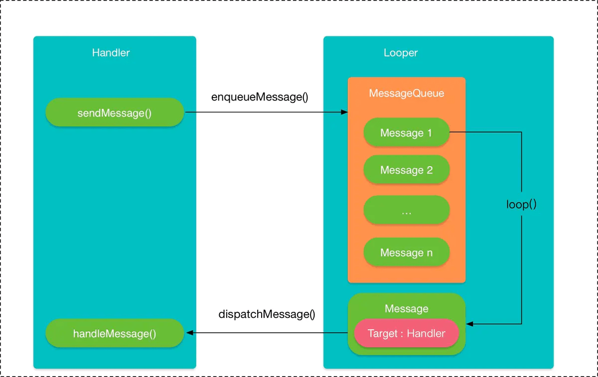

<!DOCTYPE html>
<html lang="zh-CN">
<head>
  <meta charset="UTF-8">
<meta name="viewport" content="width=device-width, initial-scale=1, maximum-scale=2">
<meta name="theme-color" content="#222">
<meta name="generator" content="Hexo 5.2.0">
  <link rel="apple-touch-icon" sizes="180x180" href="/images/apple-touch-icon-next.png">
  <link rel="icon" type="image/png" sizes="32x32" href="/images/favicon-32x32-next.png">
  <link rel="icon" type="image/png" sizes="16x16" href="/images/favicon-16x16-next.png">
  <link rel="mask-icon" href="/images/logo.svg" color="#222">

<link rel="stylesheet" href="/css/main.css">


<link rel="stylesheet" href="/lib/font-awesome/css/font-awesome.min.css">


<script id="hexo-configurations">
  var NexT = window.NexT || {};
  var CONFIG = {
    hostname: new URL('https://shiro-umi.github.io').hostname,
    root: '/',
    scheme: 'Muse',
    version: '7.6.0',
    exturl: false,
    sidebar: {"position":"left","display":"post","padding":18,"offset":12,"onmobile":false},
    copycode: {"enable":false,"show_result":false,"style":null},
    back2top: {"enable":true,"sidebar":false,"scrollpercent":false},
    bookmark: {"enable":false,"color":"#222","save":"auto"},
    fancybox: false,
    mediumzoom: false,
    lazyload: false,
    pangu: false,
    algolia: {
      appID: '',
      apiKey: '',
      indexName: '',
      hits: {"per_page":10},
      labels: {"input_placeholder":"Search for Posts","hits_empty":"We didn't find any results for the search: ${query}","hits_stats":"${hits} results found in ${time} ms"}
    },
    localsearch: {"enable":false,"trigger":"auto","top_n_per_article":1,"unescape":false,"preload":false},
    path: '',
    motion: {"enable":true,"async":false,"transition":{"post_block":"fadeIn","post_header":"slideDownIn","post_body":"slideDownIn","coll_header":"slideLeftIn","sidebar":"slideUpIn"}}
  };
</script>

  <meta name="description" content="什么是 Handler先来看看文档中是怎么说的：  A Handler allows you to send and process Message and Runnable objects associated with a thread’s MessageQueue. Each Handler instance is associated with a single thread and th">
<meta property="og:type" content="article">
<meta property="og:title" content="保姆级Handler机制解读">
<meta property="og:url" content="https://shiro-umi.github.io/2020/12/11/Handler/index.html">
<meta property="og:site_name" content="ShiroUmi">
<meta property="og:description" content="什么是 Handler先来看看文档中是怎么说的：  A Handler allows you to send and process Message and Runnable objects associated with a thread’s MessageQueue. Each Handler instance is associated with a single thread and th">
<meta property="og:locale" content="zh_CN">
<meta property="og:image" content="https://shiro-umi.github.io/2020/12/11/Handler/Handler.png">
<meta property="article:published_time" content="2020-12-11T07:39:04.000Z">
<meta property="article:modified_time" content="2020-12-15T11:36:57.000Z">
<meta property="article:author" content="Shiro-umi">
<meta property="article:tag" content="Android">
<meta name="twitter:card" content="summary">
<meta name="twitter:image" content="https://shiro-umi.github.io/2020/12/11/Handler/Handler.png">

<link rel="canonical" href="https://shiro-umi.github.io/2020/12/11/Handler/">


<script id="page-configurations">
  // https://hexo.io/docs/variables.html
  CONFIG.page = {
    sidebar: "",
    isHome: false,
    isPost: true,
    isPage: false,
    isArchive: false
  };
</script>

  <title>保姆级Handler机制解读 | ShiroUmi</title>
  


  <noscript>
  <style>
  .use-motion .brand,
  .use-motion .menu-item,
  .sidebar-inner,
  .use-motion .post-block,
  .use-motion .pagination,
  .use-motion .comments,
  .use-motion .post-header,
  .use-motion .post-body,
  .use-motion .collection-header { opacity: initial; }

  .use-motion .site-title,
  .use-motion .site-subtitle {
    opacity: initial;
    top: initial;
  }

  .use-motion .logo-line-before i { left: initial; }
  .use-motion .logo-line-after i { right: initial; }
  </style>
</noscript>

</head>

<body itemscope itemtype="http://schema.org/WebPage">
  <div class="container use-motion">
    <div class="headband"></div>

    <header class="header" itemscope itemtype="http://schema.org/WPHeader">
      <div class="header-inner"><div class="site-brand-container">
  <div class="site-meta">

    <div>
      <a href="/" class="brand" rel="start">
        <span class="logo-line-before"><i></i></span>
        <span class="site-title">ShiroUmi</span>
        <span class="logo-line-after"><i></i></span>
      </a>
    </div>
        <p class="site-subtitle">三流码奴的自我救赎</p>
  </div>

  <div class="site-nav-toggle">
    <div class="toggle" aria-label="切换导航栏">
      <span class="toggle-line toggle-line-first"></span>
      <span class="toggle-line toggle-line-middle"></span>
      <span class="toggle-line toggle-line-last"></span>
    </div>
  </div>
</div>


<nav class="site-nav">
  
  <ul id="menu" class="menu">
        <li class="menu-item menu-item-home">

    <a href="/" rel="section"><i class="fa fa-fw fa-home"></i>首页</a>

  </li>
        <li class="menu-item menu-item-archives">

    <a href="/archives/" rel="section"><i class="fa fa-fw fa-archive"></i>归档</a>

  </li>
  </ul>

</nav>
</div>
    </header>

    
  <div class="back-to-top">
    <i class="fa fa-arrow-up"></i>
    <span>0%</span>
  </div>


    <main class="main">
      <div class="main-inner">
        <div class="content-wrap">
          

          <div class="content">
            

  <div class="posts-expand">
      
  
  
  <article itemscope itemtype="http://schema.org/Article" class="post-block " lang="zh-CN">
    <link itemprop="mainEntityOfPage" href="https://shiro-umi.github.io/2020/12/11/Handler/">

    <span hidden itemprop="author" itemscope itemtype="http://schema.org/Person">
      <meta itemprop="image" content="/images/avatar.gif">
      <meta itemprop="name" content="Shiro-umi">
      <meta itemprop="description" content="">
    </span>

    <span hidden itemprop="publisher" itemscope itemtype="http://schema.org/Organization">
      <meta itemprop="name" content="ShiroUmi">
    </span>
      <header class="post-header">
        <h1 class="post-title" itemprop="name headline">
          保姆级Handler机制解读
        </h1>

        <div class="post-meta">
            <span class="post-meta-item">
              <span class="post-meta-item-icon">
                <i class="fa fa-calendar-o"></i>
              </span>
              <span class="post-meta-item-text">发表于</span>

              <time title="创建时间：2020-12-11 15:39:04" itemprop="dateCreated datePublished" datetime="2020-12-11T15:39:04+08:00">2020-12-11</time>
            </span>
              <span class="post-meta-item">
                <span class="post-meta-item-icon">
                  <i class="fa fa-calendar-check-o"></i>
                </span>
                <span class="post-meta-item-text">更新于</span>
                <time title="修改时间：2020-12-15 19:36:57" itemprop="dateModified" datetime="2020-12-15T19:36:57+08:00">2020-12-15</time>
              </span>

          
            <span id="/2020/12/11/Handler/" class="post-meta-item leancloud_visitors" data-flag-title="保姆级Handler机制解读" title="阅读次数">
              <span class="post-meta-item-icon">
                <i class="fa fa-eye"></i>
              </span>
              <span class="post-meta-item-text">阅读次数：</span>
              <span class="leancloud-visitors-count"></span>
            </span>

        </div>
      </header>

    
    
    
    <div class="post-body" itemprop="articleBody">

      
        <h1 id="什么是-Handler"><a href="#什么是-Handler" class="headerlink" title="什么是 Handler"></a>什么是 Handler</h1><p>先来看看文档中是怎么说的：</p>
<blockquote>
<p>A Handler allows you to send and process Message and Runnable objects associated with a thread’s MessageQueue. Each Handler instance is associated with a single thread and that thread’s message queue. When you create a new Handler it is bound to a Looper. It will deliver messages and runnables to that Looper’s message queue and execute them on that Looper’s thread.</p>
</blockquote>
<p>意思是说<code>Handler</code>是一个用于处理<code>Message</code>和执行<code>Runnable</code>的工具。每个<code>Thread</code>都通过<code>Looper</code>维护一个<code>MessageQueue</code>。每实例化一个<code>Handler</code>都需要绑定一个<code>Looper</code>。<code>Handler</code>主要功能就是向<code>MessageQueue</code>中发送<code>Message</code>和<code>Runnable</code>，并在<code>Message</code>被处理的时候执行其中的<code>Runnable</code>。</p>
<p>可以看到<code>Handler</code>的背后是一整套的<strong>消息流水线机制</strong>，而<code>Handler</code>只是我们利用这套机制的入口。</p>
<a id="more"></a>

<h1 id="Handler有什么用"><a href="#Handler有什么用" class="headerlink" title="Handler有什么用"></a>Handler有什么用</h1><p>通过上面的描述我们大概可以脑补出整套<strong>消息流水线机制</strong>的引用关系：</p>
<ul>
<li><code>Handler</code>绑定一个<code>Looper</code></li>
<li><code>Looper</code>由<code>Thread</code>维护</li>
<li><code>Looper</code>内部维护一个<code>MessageQueue</code></li>
</ul>
<p>不难发现实际上<code>Handler</code>是间接绑定了<code>Thread</code>的。也就是说不同的<code>Handler</code>可以向<strong>不同的线程</strong>发送<code>Message</code>，在<code>Message</code>被处理的时候执行回调方法，回到主线程。或者可以直接向主线程中发送消息，或延迟消息进行<code>delay</code>操作。</p>
<p>这就是为什么要有<code>Handler</code>：</p>
<ul>
<li>在<code>Android</code>系统中需要一个切换线程的工具</li>
<li>同时需要在某些情况下进行<code>delay</code>操作</li>
</ul>
<p>这也就是整套<strong>消息流水线机制</strong>的作用。</p>
<h1 id="食用消息流水线机制的正确姿势"><a href="#食用消息流水线机制的正确姿势" class="headerlink" title="食用消息流水线机制的正确姿势"></a>食用消息流水线机制的正确姿势</h1><p>想要发送<code>Message</code>共有3种用法：</p>
<ul>
<li>实例化默认<code>Handler</code>并向<code>Message</code>添加<code>Runnable</code></li>
<li>实例化默认<code>Handler</code>并通过构造函数传入接口<code>Handler.Callback</code>实例</li>
<li>继承<code>Handler</code>重写<code>handleMessage()</code>方法</li>
</ul>
<p>当这3种实现方式同时存在的时候，遵循优先级<code>Message.callback &gt; Callback.handleMessage &gt; handleMessage</code>：</p>
<figure class="highlight java"><table><tr><td class="gutter"><pre><span class="line">1</span><br><span class="line">2</span><br><span class="line">3</span><br><span class="line">4</span><br><span class="line">5</span><br><span class="line">6</span><br><span class="line">7</span><br><span class="line">8</span><br><span class="line">9</span><br><span class="line">10</span><br><span class="line">11</span><br><span class="line">12</span><br><span class="line">13</span><br><span class="line">14</span><br><span class="line">15</span><br><span class="line">16</span><br><span class="line">17</span><br><span class="line">18</span><br><span class="line">19</span><br></pre></td><td class="code"><pre><span class="line"><span class="comment">/**</span></span><br><span class="line"><span class="comment"> * Handle system messages here.</span></span><br><span class="line"><span class="comment"> */</span></span><br><span class="line"><span class="function"><span class="keyword">public</span> <span class="keyword">void</span> <span class="title">dispatchMessage</span><span class="params">(<span class="meta">@NonNull</span> Message msg)</span> </span>&#123;</span><br><span class="line">    <span class="comment">// 如果msg有callback则直接处理msg的callback</span></span><br><span class="line">    <span class="keyword">if</span> (msg.callback != <span class="keyword">null</span>) &#123;</span><br><span class="line">        handleCallback(msg);</span><br><span class="line">    &#125; <span class="keyword">else</span> &#123;</span><br><span class="line">        <span class="comment">// 如果已通过构造函数设置mCallback则只处理该callback</span></span><br><span class="line">        <span class="keyword">if</span> (mCallback != <span class="keyword">null</span>) &#123;</span><br><span class="line">            <span class="comment">// mCallback处理成功直接返回</span></span><br><span class="line">            <span class="keyword">if</span> (mCallback.handleMessage(msg)) &#123;</span><br><span class="line">                <span class="keyword">return</span>;</span><br><span class="line">            &#125;</span><br><span class="line">        &#125;</span><br><span class="line">        <span class="comment">// 最后才通过Handler自己的回调处理Message</span></span><br><span class="line">        handleMessage(msg);</span><br><span class="line">    &#125;</span><br><span class="line">&#125;</span><br></pre></td></tr></table></figure>

<p>下面来分别看看上面说的3种方式分别如何实现</p>
<h2 id="向Message添加Callback"><a href="#向Message添加Callback" class="headerlink" title="向Message添加Callback"></a>向Message添加Callback</h2><figure class="highlight kotlin"><table><tr><td class="gutter"><pre><span class="line">1</span><br><span class="line">2</span><br><span class="line">3</span><br><span class="line">4</span><br><span class="line">5</span><br><span class="line">6</span><br></pre></td><td class="code"><pre><span class="line"><span class="keyword">val</span> h = Handler(Looper.getMainLooper())</span><br><span class="line"><span class="keyword">val</span> msg = Message.obtain(h)</span><br><span class="line"><span class="comment">// Message的setCallback(Runnable)方法被标记为对App不可见，需要通过反射调用</span></span><br><span class="line"><span class="keyword">val</span> method = msg.javaClass.getMethod(<span class="string">&quot;setCallback&quot;</span>, Runnable::<span class="keyword">class</span>.java)</span><br><span class="line">method.invoke(msg, &#123; Log.e(<span class="string">&quot;handler test&quot;</span>, <span class="string">&quot;succeed!&quot;</span>) &#125;)</span><br><span class="line">h.sendMessageDelayed(msg, <span class="number">2000L</span>)</span><br></pre></td></tr></table></figure>

<h2 id="向Handler添加Callback"><a href="#向Handler添加Callback" class="headerlink" title="向Handler添加Callback"></a>向Handler添加Callback</h2><figure class="highlight kotlin"><table><tr><td class="gutter"><pre><span class="line">1</span><br><span class="line">2</span><br><span class="line">3</span><br><span class="line">4</span><br><span class="line">5</span><br><span class="line">6</span><br><span class="line">7</span><br><span class="line">8</span><br><span class="line">9</span><br></pre></td><td class="code"><pre><span class="line"><span class="keyword">val</span> h = Handler(</span><br><span class="line">    Looper.getMainLooper(),</span><br><span class="line">    <span class="comment">// 通过构造函数给Handler设置Handler.Callback</span></span><br><span class="line">    Handler.Callback &#123;</span><br><span class="line">        Log.e(<span class="string">&quot;handler test&quot;</span>, <span class="string">&quot;succeed!&quot;</span>)</span><br><span class="line">        <span class="literal">true</span></span><br><span class="line">    &#125;)</span><br><span class="line"><span class="keyword">val</span> msg = Message.obtain(h)</span><br><span class="line">h.sendMessageDelayed(msg, <span class="number">2000L</span>)</span><br></pre></td></tr></table></figure>

<h2 id="继承Handler重写handleMessage"><a href="#继承Handler重写handleMessage" class="headerlink" title="继承Handler重写handleMessage()"></a>继承Handler重写handleMessage()</h2><figure class="highlight kotlin"><table><tr><td class="gutter"><pre><span class="line">1</span><br><span class="line">2</span><br><span class="line">3</span><br><span class="line">4</span><br><span class="line">5</span><br><span class="line">6</span><br><span class="line">7</span><br><span class="line">8</span><br><span class="line">9</span><br><span class="line">10</span><br><span class="line">11</span><br><span class="line">12</span><br><span class="line">13</span><br><span class="line">14</span><br><span class="line">15</span><br><span class="line">16</span><br><span class="line">17</span><br><span class="line">18</span><br><span class="line">19</span><br><span class="line">20</span><br><span class="line">21</span><br><span class="line">22</span><br><span class="line">23</span><br><span class="line">24</span><br><span class="line">25</span><br></pre></td><td class="code"><pre><span class="line"><span class="function"><span class="keyword">fun</span> <span class="title">postMessage</span><span class="params">()</span></span> &#123;</span><br><span class="line">    <span class="keyword">val</span> h = CustomizedHandler(</span><br><span class="line">        Looper.getMainLooper(),</span><br><span class="line">        WeakReference(<span class="keyword">this</span>)</span><br><span class="line">    )</span><br><span class="line">    <span class="keyword">val</span> msg = Message.obtain(h)</span><br><span class="line">    h.sendMessageDelayed(msg, <span class="number">2000L</span>)</span><br><span class="line">&#125;</span><br><span class="line"></span><br><span class="line"><span class="keyword">companion</span> <span class="keyword">object</span> &#123;</span><br><span class="line">    <span class="comment">// 静态内部类，非静态内部类会持有外部类(Activity)的引用，导致内存泄漏，后面会详细讲到</span></span><br><span class="line">    <span class="class"><span class="keyword">class</span> <span class="title">CustomizedHandler</span></span>(</span><br><span class="line">        looper: Looper,</span><br><span class="line">        <span class="comment">// Activity弱引用</span></span><br><span class="line">        <span class="keyword">private</span> <span class="keyword">val</span> activity: WeakReference&lt;Activity&gt;</span><br><span class="line">    ) : Handler(looper) &#123;</span><br><span class="line">        <span class="comment">// 重写</span></span><br><span class="line">        <span class="keyword">override</span> <span class="function"><span class="keyword">fun</span> <span class="title">handleMessage</span><span class="params">(msg: <span class="type">Message</span>)</span></span> &#123;</span><br><span class="line">            <span class="keyword">super</span>.handleMessage(msg)</span><br><span class="line">            activity.<span class="keyword">get</span>()?.let &#123;</span><br><span class="line">                Log.e(<span class="string">&quot;handler test&quot;</span>, <span class="string">&quot;succeed!&quot;</span>)</span><br><span class="line">            &#125;</span><br><span class="line">        &#125;</span><br><span class="line">    &#125;</span><br><span class="line">&#125;</span><br></pre></td></tr></table></figure>

<h1 id="机制实现原理"><a href="#机制实现原理" class="headerlink" title="机制实现原理"></a>机制实现原理</h1><p>从上面的示例种我们可以看出，如果想通过<code>Handler</code>发送一个<code>Message</code>并回调处理，需要：</p>
<ul>
<li>创建<code>Message</code>实例</li>
<li>通过<code>Looper</code>创建<code>Handler</code>实例</li>
<li>通过<code>Handler</code>发送<code>Message</code></li>
<li>根据不同情况回调不同处理方法</li>
</ul>
<p>先上一张网上找的图：<br></p>
<h2 id="结论先行"><a href="#结论先行" class="headerlink" title="结论先行"></a>结论先行</h2><p>整个<strong>消息流水线机制</strong>主要分为3部分：</p>
<ul>
<li><code>Handler</code>负责发送<code>Message</code>和回调<code>handleMessage</code>方法。</li>
<li><code>Message</code> 是消息，知道自己应该什么时候被处理和应该回调至哪个<code>Handler</code>。同时<code>Message</code>本身是一个链表结构，自己指向下一个<code>Message</code>形成一个<code>MessageQueue</code>。</li>
<li><code>MessageQueue</code>可以理解为是对上面<code>Message</code>链表的封装，提供了一些方法对整个队列进行操作。</li>
<li><code>Looper</code>可以理解为<code>MessageQueue</code>的驱动器，通过<code>Looper</code>不断循环读取<code>MessageQueue</code>中的第一个节点，进而处理消息。</li>
</ul>
<p>总体流程是：</p>
<ol>
<li><code>Handler</code>对<code>Message</code>设置<code>delay</code>，同时将自己<code>(Handler.this)</code>设置为<code>Message</code>的<code>target</code>，并将其添加至<code>MessageQueue</code>中。</li>
<li><code>Looper</code>不断循环从<code>MessageQueue</code>中取出<code>Message</code>，并根据前面提到的优先级决定是否回调<code>Message.target</code>对应的<code>Handler</code>。</li>
<li>若回调至<code>Handler</code>则由<code>Handler</code>的<code>Callback</code>或<code>handleMessage(Message)</code>方法进行处理。</li>
</ol>
<h2 id="Message"><a href="#Message" class="headerlink" title="Message"></a>Message</h2><p>为什么先说<code>Message</code>呢？通过前面的分析我们可以知道<code>Message</code>不仅仅是个简单的消息：</p>
<ul>
<li>可以携带<code>Runnable</code>回调，被优先处理并拦截<code>Handler</code>的处理方法</li>
<li>持有<code>Handler</code>引用，可以回调到特定的<code>Handler</code>，而<code>Message</code>本身是要被发送至<code>MessageQueue</code>中的，也就说明<code>Message</code>其实是<code>MessageQueue</code>和<code>Handler</code>之间通信的桥梁</li>
</ul>
<p>感性的解释一下，可以把<code>Message</code>理解为一个跑腿的，<code>Handler </code>让<code>Message</code>去银行取钱，<code>Message</code>去了之后直接去到<code>MessageQueue</code>中排队，最后排到了自己取完了钱，需要把钱还给<code>Handler</code>，这时就通过<code>Handler</code>的引用回调至<code>target handler</code>的处理方法。</p>
<p>下面来看看<code>Message</code>的主要成员和方法：</p>
<h3 id="成员"><a href="#成员" class="headerlink" title="成员"></a>成员</h3><figure class="highlight java"><table><tr><td class="gutter"><pre><span class="line">1</span><br><span class="line">2</span><br><span class="line">3</span><br><span class="line">4</span><br><span class="line">5</span><br><span class="line">6</span><br><span class="line">7</span><br><span class="line">8</span><br><span class="line">9</span><br><span class="line">10</span><br><span class="line">11</span><br><span class="line">12</span><br><span class="line">13</span><br><span class="line">14</span><br><span class="line">15</span><br><span class="line">16</span><br><span class="line">17</span><br><span class="line">18</span><br><span class="line">19</span><br></pre></td><td class="code"><pre><span class="line"><span class="comment">// 用户自定义的code，因为每个Message的target都不一样，所以不需要考虑在不同Handler中冲突的情况</span></span><br><span class="line"><span class="keyword">public</span> <span class="keyword">int</span> what;</span><br><span class="line"></span><br><span class="line"><span class="comment">// 延迟消息的关键，标记了这个Message应该延迟多久之后才被处理</span></span><br><span class="line"><span class="keyword">public</span> <span class="keyword">long</span> when;</span><br><span class="line"></span><br><span class="line"><span class="comment">// 回调对应Handler的关键，在Message中持有一个发送该Message的Handler引用，当Message被处理之后通过这个引用回调的特定Handler</span></span><br><span class="line">Handler target;</span><br><span class="line"></span><br><span class="line"><span class="comment">// 前面分析过，Message自己持有一个优先级最高的callback，可以覆盖掉对应Handler的处理逻辑，同时其set方法对app隐藏，只能通过反射调用</span></span><br><span class="line">Runnable callback;</span><br><span class="line"></span><br><span class="line"><span class="comment">// 从这个成员我们可以看出Message本身是一个链表结构</span></span><br><span class="line"><span class="comment">// 这里Message用链表结构主要有两方面的考虑</span></span><br><span class="line"><span class="comment">// 1. Message在系统中数量很多，如果用array实现的话会占用大量连续内存空间</span></span><br><span class="line"><span class="comment">// 2. Message虽然数量很多但是处理的也很快，而且数量不定，也就是说如果用数组实现的话为了避免空间浪费，则需要</span></span><br><span class="line"><span class="comment">//    对数组不停的进行扩容和减容，非常影响效率，而且会造成内存抖动</span></span><br><span class="line"><span class="comment">// 这个时候链表的优势就体现出来了，链表不需要连续的空间，非常适合Message这种大量且不定数量的情况</span></span><br><span class="line">Message next;</span><br></pre></td></tr></table></figure>

<h3 id="构造"><a href="#构造" class="headerlink" title="构造"></a>构造</h3><p><code>Message.obtain()</code>，一看到<code>obtain</code>这个字眼，相信只要看过一些源码的同学很快就反应过来了：<code>Message</code>是池化的。</p>
<p>回顾一下<strong>池化</strong>的思想：如果有一个类需要被频繁的实例化，并且存活时间非常短，这个时候创建和销毁的工作就会白白占用很多系统资源，所以为了避免这种情况的发生，需要用一个<code>池</code>将实例化好的对象保存起来，如果需要使用就尝试去<code>池</code>中取出实例进行复用。</p>
<p>源码中<code>obtain()</code>方法很多，一共有<code>7</code>种重载，但最终调用的还都是这个无参的原始<code>obtain()</code>方法，下面来看看这个方法中做了什么：</p>
<figure class="highlight java"><table><tr><td class="gutter"><pre><span class="line">1</span><br><span class="line">2</span><br><span class="line">3</span><br><span class="line">4</span><br><span class="line">5</span><br><span class="line">6</span><br><span class="line">7</span><br><span class="line">8</span><br><span class="line">9</span><br><span class="line">10</span><br><span class="line">11</span><br><span class="line">12</span><br><span class="line">13</span><br><span class="line">14</span><br><span class="line">15</span><br><span class="line">16</span><br><span class="line">17</span><br><span class="line">18</span><br><span class="line">19</span><br><span class="line">20</span><br><span class="line">21</span><br><span class="line">22</span><br><span class="line">23</span><br><span class="line">24</span><br><span class="line">25</span><br><span class="line">26</span><br><span class="line">27</span><br><span class="line">28</span><br><span class="line">29</span><br><span class="line">30</span><br><span class="line">31</span><br><span class="line">32</span><br><span class="line">33</span><br></pre></td><td class="code"><pre><span class="line"><span class="comment">// 消息池同步标志</span></span><br><span class="line"><span class="keyword">public</span> <span class="keyword">static</span> <span class="keyword">final</span> Object sPoolSync = <span class="keyword">new</span> Object();</span><br><span class="line"><span class="comment">// 消息池本体，前面提到了Message本身是链表结构，所以这里消息池也是链表结构</span></span><br><span class="line"><span class="keyword">private</span> <span class="keyword">static</span> Message sPool;</span><br><span class="line"><span class="comment">// 消息池的大小</span></span><br><span class="line"><span class="keyword">private</span> <span class="keyword">static</span> <span class="keyword">int</span> sPoolSize = <span class="number">0</span>;</span><br><span class="line"><span class="comment">// 消息池的最大容量</span></span><br><span class="line"><span class="keyword">private</span> <span class="keyword">static</span> <span class="keyword">final</span> <span class="keyword">int</span> MAX_POOL_SIZE = <span class="number">50</span>;</span><br><span class="line"></span><br><span class="line"><span class="comment">// 无参的原始obtain方法</span></span><br><span class="line"><span class="function"><span class="keyword">public</span> <span class="keyword">static</span> Message <span class="title">obtain</span><span class="params">()</span> </span>&#123;</span><br><span class="line">    <span class="comment">/**</span></span><br><span class="line"><span class="comment">     * 不难发现，上面用到的所有消息池相关的成员全都是静态的，也就是说这个消息池和相关的成员</span></span><br><span class="line"><span class="comment">     * 都是全局的，在多线程的情况下如果不加锁极大概率会造成取得的数据在预期之外</span></span><br><span class="line"><span class="comment">     */</span></span><br><span class="line">    <span class="keyword">synchronized</span> (sPoolSync) &#123;</span><br><span class="line">        <span class="comment">// 查看消息池中有没有消息</span></span><br><span class="line">        <span class="keyword">if</span> (sPool != <span class="keyword">null</span>) &#123;</span><br><span class="line">            <span class="comment">// 从消息池中取出第一个消息</span></span><br><span class="line">            Message m = sPool;</span><br><span class="line">            <span class="comment">// 将消息池的引用指向下一个节点</span></span><br><span class="line">            sPool = m.next;</span><br><span class="line">            <span class="comment">// 重置刚取出的message状态，至此已完成Message的复用</span></span><br><span class="line">            m.next = <span class="keyword">null</span>;</span><br><span class="line">            m.flags = <span class="number">0</span>; </span><br><span class="line">            <span class="comment">// 消息池大小-1</span></span><br><span class="line">            sPoolSize--;</span><br><span class="line">            <span class="keyword">return</span> m;</span><br><span class="line">        &#125;</span><br><span class="line">    &#125;</span><br><span class="line">    <span class="comment">// 消息池中没有消息，则直接实例化一个新的Message</span></span><br><span class="line">    <span class="keyword">return</span> <span class="keyword">new</span> Message();</span><br><span class="line">&#125;</span><br></pre></td></tr></table></figure>

<h2 id="Handler"><a href="#Handler" class="headerlink" title="Handler"></a>Handler</h2><h3 id="构造-1"><a href="#构造-1" class="headerlink" title="构造"></a>构造</h3><p>我们直接来看<code>Handler</code>的常用构造函数：</p>
<figure class="highlight java"><table><tr><td class="gutter"><pre><span class="line">1</span><br><span class="line">2</span><br><span class="line">3</span><br><span class="line">4</span><br><span class="line">5</span><br><span class="line">6</span><br><span class="line">7</span><br><span class="line">8</span><br><span class="line">9</span><br><span class="line">10</span><br><span class="line">11</span><br><span class="line">12</span><br><span class="line">13</span><br><span class="line">14</span><br><span class="line">15</span><br><span class="line">16</span><br><span class="line">17</span><br><span class="line">18</span><br><span class="line">19</span><br><span class="line">20</span><br><span class="line">21</span><br><span class="line">22</span><br><span class="line">23</span><br><span class="line">24</span><br><span class="line">25</span><br><span class="line">26</span><br><span class="line">27</span><br><span class="line">28</span><br><span class="line">29</span><br><span class="line">30</span><br><span class="line">31</span><br><span class="line">32</span><br><span class="line">33</span><br><span class="line">34</span><br><span class="line">35</span><br><span class="line">36</span><br><span class="line">37</span><br></pre></td><td class="code"><pre><span class="line"><span class="keyword">final</span> Looper mLooper;</span><br><span class="line"><span class="keyword">final</span> MessageQueue mQueue;</span><br><span class="line"><span class="keyword">final</span> Callback mCallback;</span><br><span class="line"></span><br><span class="line"><span class="comment">// 在Android 11中被弃用</span></span><br><span class="line"><span class="meta">@Deprecated</span></span><br><span class="line"><span class="function"><span class="keyword">public</span> <span class="title">Handler</span><span class="params">()</span> </span>&#123;</span><br><span class="line">    <span class="keyword">this</span>(<span class="keyword">null</span>, <span class="keyword">false</span>);</span><br><span class="line">&#125;</span><br><span class="line"></span><br><span class="line"><span class="comment">// 在Android 11中被弃用</span></span><br><span class="line"><span class="meta">@Deprecated</span></span><br><span class="line"><span class="function"><span class="keyword">public</span> <span class="title">Handler</span><span class="params">(<span class="meta">@Nullable</span> Callback callback)</span> </span>&#123;</span><br><span class="line">    <span class="keyword">this</span>(callback, <span class="keyword">false</span>);</span><br><span class="line">&#125;</span><br><span class="line"></span><br><span class="line"><span class="comment">// 弃用的原因，Handler本身必须绑定一个Looper</span></span><br><span class="line"><span class="comment">// 这种无Looper参数的构造函数在隐式选择Looper的时候有可能不是预期结果</span></span><br><span class="line"></span><br><span class="line"><span class="function"><span class="keyword">public</span> <span class="title">Handler</span><span class="params">(<span class="meta">@NonNull</span> Looper looper)</span> </span>&#123;</span><br><span class="line">    <span class="keyword">this</span>(looper, <span class="keyword">null</span>, <span class="keyword">false</span>);</span><br><span class="line">&#125;</span><br><span class="line"></span><br><span class="line"><span class="function"><span class="keyword">public</span> <span class="title">Handler</span><span class="params">(<span class="meta">@NonNull</span> Looper looper, <span class="meta">@Nullable</span> Callback callback)</span> </span>&#123;</span><br><span class="line">    <span class="keyword">this</span>(looper, callback, <span class="keyword">false</span>);</span><br><span class="line">&#125;</span><br><span class="line"></span><br><span class="line"><span class="comment">// 可以看到无论哪个构造函数最后都会调用到这个构方法</span></span><br><span class="line"><span class="comment">// 其工作就是简单的为类成员赋值</span></span><br><span class="line"><span class="comment">// 唯一需要注意的地方是，mQueue是直接从Looper拿到的，也就是说Handler通过Looper与MessageQueue进行了绑定</span></span><br><span class="line"><span class="meta">@UnsupportedAppUsage</span></span><br><span class="line"><span class="function"><span class="keyword">public</span> <span class="title">Handler</span><span class="params">(<span class="meta">@NonNull</span> Looper looper, <span class="meta">@Nullable</span> Callback callback, <span class="keyword">boolean</span> async)</span> </span>&#123;</span><br><span class="line">    mLooper = looper;</span><br><span class="line">    mQueue = looper.mQueue;</span><br><span class="line">    mCallback = callback;</span><br><span class="line">    mAsynchronous = async;</span><br><span class="line">&#125;</span><br></pre></td></tr></table></figure>

<p>可以看出<code>Handler</code>的构造其实非常直接：</p>
<ul>
<li>持有一个<code>Looper</code>引用</li>
<li>通过<code>Looper</code>持有一个<code>MessageQueue</code>引用</li>
<li>一个可空的<code>Handler.Callback</code></li>
<li>设置是否发送异步消息</li>
</ul>
<p>关于异步消息后面会单独讲，这里先不过多描述，总的来说<code>Handler</code>的初始化就是给<code>mLooper</code>，<code>mQueue</code>和<code>mCallback</code>赋值。</p>
<h3 id="发送消息"><a href="#发送消息" class="headerlink" title="发送消息"></a>发送消息</h3><p><code>Handler</code>中有n多用于发送消息的方法，由于实在太多在这里就不一一细说了。</p>
<p>但是这些方法都有一个共性，无论哪个发送<code>Message</code>的方法最终都会调用到<code>sendMessageAtTime</code>方法：</p>
<figure class="highlight java"><table><tr><td class="gutter"><pre><span class="line">1</span><br><span class="line">2</span><br><span class="line">3</span><br><span class="line">4</span><br><span class="line">5</span><br><span class="line">6</span><br><span class="line">7</span><br><span class="line">8</span><br><span class="line">9</span><br><span class="line">10</span><br><span class="line">11</span><br><span class="line">12</span><br></pre></td><td class="code"><pre><span class="line"><span class="function"><span class="keyword">public</span> <span class="keyword">boolean</span> <span class="title">sendMessageAtTime</span><span class="params">(<span class="meta">@NonNull</span> Message msg, <span class="keyword">long</span> uptimeMillis)</span> </span>&#123;</span><br><span class="line">    MessageQueue queue = mQueue;</span><br><span class="line">    <span class="keyword">if</span> (queue == <span class="keyword">null</span>) &#123;</span><br><span class="line">        RuntimeException e = <span class="keyword">new</span> RuntimeException(</span><br><span class="line">                <span class="keyword">this</span> + <span class="string">&quot; sendMessageAtTime() called with no mQueue&quot;</span>);</span><br><span class="line">        Log.w(<span class="string">&quot;Looper&quot;</span>, e.getMessage(), e);</span><br><span class="line">        <span class="keyword">return</span> <span class="keyword">false</span>;</span><br><span class="line">    &#125;</span><br><span class="line">    <span class="comment">// 将消息发送至MessageQueue，入队</span></span><br><span class="line">    <span class="comment">// 其中uptimeMillis标志着这个Message的延迟时间，如果超过这个时间还没有被处理就会被回收掉</span></span><br><span class="line">    <span class="keyword">return</span> enqueueMessage(queue, msg, uptimeMillis);</span><br><span class="line">&#125;</span><br></pre></td></tr></table></figure>

<p>继续跟进<code>enqueueMessage()</code>方法：</p>
<figure class="highlight java"><table><tr><td class="gutter"><pre><span class="line">1</span><br><span class="line">2</span><br><span class="line">3</span><br><span class="line">4</span><br><span class="line">5</span><br><span class="line">6</span><br><span class="line">7</span><br><span class="line">8</span><br><span class="line">9</span><br><span class="line">10</span><br><span class="line">11</span><br><span class="line">12</span><br></pre></td><td class="code"><pre><span class="line"><span class="function"><span class="keyword">private</span> <span class="keyword">boolean</span> <span class="title">enqueueMessage</span><span class="params">(<span class="meta">@NonNull</span> MessageQueue queue, <span class="meta">@NonNull</span> Message msg,</span></span></span><br><span class="line"><span class="function"><span class="params">        <span class="keyword">long</span> uptimeMillis)</span> </span>&#123;</span><br><span class="line">    <span class="comment">// 这一步非常关键，在这里将msg的target指定为当前Handler，消息被处理之后可通过这个引用回调至Handler中</span></span><br><span class="line">    msg.target = <span class="keyword">this</span>;</span><br><span class="line">    msg.workSourceUid = ThreadLocalWorkSource.getUid();</span><br><span class="line">    <span class="keyword">if</span> (mAsynchronous) &#123;</span><br><span class="line">        <span class="comment">// 如果是异步消息则将flag置为true</span></span><br><span class="line">        msg.setAsynchronous(<span class="keyword">true</span>);</span><br><span class="line">    &#125;</span><br><span class="line">    <span class="comment">// 执行MessageQueue.enqueueMessage()方法，将Mesaage加入MessageQueue中</span></span><br><span class="line">    <span class="keyword">return</span> queue.enqueueMessage(msg, uptimeMillis);</span><br><span class="line">&#125;</span><br></pre></td></tr></table></figure>

<h3 id="回调"><a href="#回调" class="headerlink" title="回调"></a>回调</h3><figure class="highlight java"><table><tr><td class="gutter"><pre><span class="line">1</span><br><span class="line">2</span><br><span class="line">3</span><br><span class="line">4</span><br><span class="line">5</span><br><span class="line">6</span><br><span class="line">7</span><br><span class="line">8</span><br><span class="line">9</span><br><span class="line">10</span><br><span class="line">11</span><br><span class="line">12</span><br><span class="line">13</span><br><span class="line">14</span><br><span class="line">15</span><br><span class="line">16</span><br><span class="line">17</span><br><span class="line">18</span><br><span class="line">19</span><br></pre></td><td class="code"><pre><span class="line"><span class="comment">// 这一段逻辑前面说过了就不再过多解释</span></span><br><span class="line"><span class="comment">// 只需要知道最终对Message任务完成做出响应的是Handler</span></span><br><span class="line"><span class="comment">// Message通过target调用Handler的dispatchMessage()方法</span></span><br><span class="line"><span class="function"><span class="keyword">public</span> <span class="keyword">void</span> <span class="title">dispatchMessage</span><span class="params">(<span class="meta">@NonNull</span> Message msg)</span> </span>&#123;</span><br><span class="line">    <span class="comment">// 如果msg有callback则直接处理msg的callback</span></span><br><span class="line">    <span class="keyword">if</span> (msg.callback != <span class="keyword">null</span>) &#123;</span><br><span class="line">        handleCallback(msg);</span><br><span class="line">    &#125; <span class="keyword">else</span> &#123;</span><br><span class="line">        <span class="comment">// 如果已通过构造函数设置mCallback则只处理该callback</span></span><br><span class="line">        <span class="keyword">if</span> (mCallback != <span class="keyword">null</span>) &#123;</span><br><span class="line">            <span class="comment">// mCallback处理成功直接返回</span></span><br><span class="line">            <span class="keyword">if</span> (mCallback.handleMessage(msg)) &#123;</span><br><span class="line">                <span class="keyword">return</span>;</span><br><span class="line">            &#125;</span><br><span class="line">        &#125;</span><br><span class="line">        <span class="comment">// 最后才通过Handler自己的回调处理Message</span></span><br><span class="line">        handleMessage(msg);</span><br><span class="line">    &#125;</span><br><span class="line">&#125;</span><br></pre></td></tr></table></figure>

<p>稍微总结一下，<code>Handler</code>其实就是一个<code>发送器/接收器</code>，用来将<code>Message</code>发送到<code>MessageQueue</code>中，当消息被处理之后会通过<code>Message.target</code>回调至<code>Handler</code>中进行处理。</p>
<h2 id="MessageQueue"><a href="#MessageQueue" class="headerlink" title="MessageQueue"></a>MessageQueue</h2><p>因为消息量大且数量不固定，所以不可能同时处理所有<code>Message</code>，这个时候就需要对大量的<code>Message</code>排队处理。</p>
<p><code>Message</code>链表本身就形成了一个队列，但是并不能简单的根据这个链表结构利用起队列的特性，所以通过<code>MessageQueue</code>将整个链表进行了封装，对外提供对于<code>队列</code>的操作方式。</p>
<h3 id="构造-2"><a href="#构造-2" class="headerlink" title="构造"></a>构造</h3><p>先来看一看<code>MessageQueue</code>的构造方法：</p>
<figure class="highlight java"><table><tr><td class="gutter"><pre><span class="line">1</span><br><span class="line">2</span><br><span class="line">3</span><br><span class="line">4</span><br><span class="line">5</span><br><span class="line">6</span><br><span class="line">7</span><br><span class="line">8</span><br><span class="line">9</span><br><span class="line">10</span><br></pre></td><td class="code"><pre><span class="line"><span class="comment">// 用来标记是否允许当前MessageQueue退出</span></span><br><span class="line"><span class="keyword">private</span> <span class="keyword">final</span> <span class="keyword">boolean</span> mQuitAllowed;</span><br><span class="line"><span class="comment">// 这个成员在这里不做深究，native方法使用</span></span><br><span class="line"><span class="comment">// 可以简单理解为，mPtr=0的时候表示MessageQueue已经退出了，否则MessageQueue还在运行</span></span><br><span class="line"><span class="keyword">private</span> <span class="keyword">long</span> mPtr; <span class="comment">// used by native code</span></span><br><span class="line"></span><br><span class="line">MessageQueue(<span class="keyword">boolean</span> quitAllowed) &#123;</span><br><span class="line">    mQuitAllowed = quitAllowed;</span><br><span class="line">    mPtr = nativeInit();</span><br><span class="line">&#125;</span><br></pre></td></tr></table></figure>

<p>可以看到<code>MessageQueue</code>的构造方法非常简单，只是初始化了两个标志：</p>
<ul>
<li>是否允许退出</li>
<li>是否已经退出</li>
</ul>
<h3 id="入队"><a href="#入队" class="headerlink" title="入队"></a>入队</h3><p>这里就是<code>Handler</code>发送消息最终调用到的方法，直接来看代码：</p>
<figure class="highlight java"><table><tr><td class="gutter"><pre><span class="line">1</span><br><span class="line">2</span><br><span class="line">3</span><br><span class="line">4</span><br><span class="line">5</span><br><span class="line">6</span><br><span class="line">7</span><br><span class="line">8</span><br><span class="line">9</span><br><span class="line">10</span><br><span class="line">11</span><br><span class="line">12</span><br><span class="line">13</span><br><span class="line">14</span><br><span class="line">15</span><br><span class="line">16</span><br><span class="line">17</span><br><span class="line">18</span><br><span class="line">19</span><br><span class="line">20</span><br><span class="line">21</span><br><span class="line">22</span><br><span class="line">23</span><br><span class="line">24</span><br><span class="line">25</span><br><span class="line">26</span><br><span class="line">27</span><br><span class="line">28</span><br><span class="line">29</span><br><span class="line">30</span><br><span class="line">31</span><br><span class="line">32</span><br><span class="line">33</span><br><span class="line">34</span><br><span class="line">35</span><br><span class="line">36</span><br><span class="line">37</span><br><span class="line">38</span><br><span class="line">39</span><br><span class="line">40</span><br><span class="line">41</span><br><span class="line">42</span><br><span class="line">43</span><br><span class="line">44</span><br><span class="line">45</span><br><span class="line">46</span><br><span class="line">47</span><br><span class="line">48</span><br><span class="line">49</span><br><span class="line">50</span><br><span class="line">51</span><br><span class="line">52</span><br><span class="line">53</span><br><span class="line">54</span><br><span class="line">55</span><br><span class="line">56</span><br><span class="line">57</span><br><span class="line">58</span><br><span class="line">59</span><br><span class="line">60</span><br><span class="line">61</span><br><span class="line">62</span><br><span class="line">63</span><br><span class="line">64</span><br><span class="line">65</span><br><span class="line">66</span><br><span class="line">67</span><br><span class="line">68</span><br><span class="line">69</span><br><span class="line">70</span><br><span class="line">71</span><br><span class="line">72</span><br><span class="line">73</span><br><span class="line">74</span><br><span class="line">75</span><br><span class="line">76</span><br><span class="line">77</span><br><span class="line">78</span><br><span class="line">79</span><br><span class="line">80</span><br><span class="line">81</span><br><span class="line">82</span><br><span class="line">83</span><br><span class="line">84</span><br><span class="line">85</span><br><span class="line">86</span><br><span class="line">87</span><br><span class="line">88</span><br><span class="line">89</span><br><span class="line">90</span><br></pre></td><td class="code"><pre><span class="line"><span class="function"><span class="keyword">boolean</span> <span class="title">enqueueMessage</span><span class="params">(Message msg, <span class="keyword">long</span> when)</span> </span>&#123;</span><br><span class="line">    <span class="comment">// 在这里检查Message是否持有Handler引用，如果没有Handler引用的话讲无法回调到处理方法</span></span><br><span class="line">    <span class="keyword">if</span> (msg.target == <span class="keyword">null</span>) &#123;</span><br><span class="line">        <span class="keyword">throw</span> <span class="keyword">new</span> IllegalArgumentException(<span class="string">&quot;Message must have a target.&quot;</span>);</span><br><span class="line">    &#125;</span><br><span class="line">    <span class="comment">// 在多线程的情况下会有来自不同线程的消息加入进来，在这个地方需要同步操作</span></span><br><span class="line">    <span class="keyword">synchronized</span> (<span class="keyword">this</span>) &#123;</span><br><span class="line">        <span class="keyword">if</span> (msg.isInUse()) &#123;</span><br><span class="line">            <span class="keyword">throw</span> <span class="keyword">new</span> IllegalStateException(msg + <span class="string">&quot; This message is already in use.&quot;</span>);</span><br><span class="line">        &#125;</span><br><span class="line">        <span class="comment">// 在MessageQueue开始退出，不再接受任何新的Message</span></span><br><span class="line">        <span class="keyword">if</span> (mQuitting) &#123;</span><br><span class="line">            IllegalStateException e = <span class="keyword">new</span> IllegalStateException(</span><br><span class="line">                    msg.target + <span class="string">&quot; sending message to a Handler on a dead thread&quot;</span>);</span><br><span class="line">            Log.w(TAG, e.getMessage(), e);</span><br><span class="line">            <span class="comment">// 回收</span></span><br><span class="line">            msg.recycle();</span><br><span class="line">            <span class="keyword">return</span> <span class="keyword">false</span>;</span><br><span class="line">        &#125;</span><br><span class="line">        msg.markInUse();</span><br><span class="line">        <span class="comment">// 设置message的延迟时间</span></span><br><span class="line">        msg.when = when;</span><br><span class="line">        Message p = mMessages;</span><br><span class="line">        <span class="keyword">boolean</span> needWake;</span><br><span class="line">        <span class="comment">/**</span></span><br><span class="line"><span class="comment">         * 一共有三个case可以直接想链表头添加一个Message：</span></span><br><span class="line"><span class="comment">         * 1. 当前消息队列中没有消息</span></span><br><span class="line"><span class="comment">         * 2. 新的Message延迟时间为0</span></span><br><span class="line"><span class="comment">         * 3. 新的Message延迟时间小于当前第一个Message的延迟时间</span></span><br><span class="line"><span class="comment">         */</span></span><br><span class="line">        <span class="keyword">if</span> (p == <span class="keyword">null</span> || when == <span class="number">0</span> || when &lt; p.when) &#123;</span><br><span class="line">            msg.next = p;</span><br><span class="line">            mMessages = msg;</span><br><span class="line">            <span class="comment">/**更新消息队列的阻塞状态</span></span><br><span class="line"><span class="comment">             * mBlock是一个boolean变量，用于表示队列是否需要阻塞</span></span><br><span class="line"><span class="comment">             * 这里有两个case</span></span><br><span class="line"><span class="comment">             * 1. 如果当前消息队列的第一个Message的处理时间还没到，则不需要唤醒队列，mBlocked = false</span></span><br><span class="line"><span class="comment">             * 2. 如果当前队列的第一个Message处理时间已经到了，则需要将队列进行唤醒，mBlocked = true</span></span><br><span class="line"><span class="comment">             */</span> </span><br><span class="line">            needWake = mBlocked;</span><br><span class="line">        &#125; <span class="keyword">else</span> &#123;</span><br><span class="line">            <span class="comment">/** </span></span><br><span class="line"><span class="comment">             * 上面if中的情况只包括向队列头部插入Message，这三种情况之外都应该向队列中间插入Message</span></span><br><span class="line"><span class="comment">             * 一般情况下，如果向队列中间插入Message是不需要唤醒队列的。</span></span><br><span class="line"><span class="comment">             * 这个地方后面将next()方法的时候会提到，这里稍微解释一下。</span></span><br><span class="line"><span class="comment">             * 判断MessageQueue是否需要阻塞的条件其实非常简单：</span></span><br><span class="line"><span class="comment">             *  	阻塞：没有Handler在等在回调消息，并且满足 </span></span><br><span class="line"><span class="comment">             * 				-&gt; 1. 消息队列中没有消息 </span></span><br><span class="line"><span class="comment">             *				-&gt; 2.队列中第一个消息还没到处理时间</span></span><br><span class="line"><span class="comment">             * 		唤醒：MessageQueue有Message</span></span><br><span class="line"><span class="comment">             * 所以在这个时候如果队列已经阻塞，只可能是因为上面阻塞case中的第二条</span></span><br><span class="line"><span class="comment">             */</span></span><br><span class="line">            </span><br><span class="line">            <span class="comment">/**</span></span><br><span class="line"><span class="comment">             * 来说下一个问题，如果看的够仔细就会发现，这个方法前面明明筛选了target不为null的Message入队，</span></span><br><span class="line"><span class="comment">             * 为什么这里还会出现p.target == null?</span></span><br><span class="line"><span class="comment">             * 其实是因为这里还有一个同步屏障(barrier)的概念在里面搅局</span></span><br><span class="line"><span class="comment">             * 同步屏障具体是什么后面会介绍，这里简单说明一下：</span></span><br><span class="line"><span class="comment">             * 一个target为null的话，说明这个message本身就是一个同步屏障，同步屏障会将队列阻塞起来，这个时候会去</span></span><br><span class="line"><span class="comment">             * 遍历整个MessageQueue，优先处理异步消息(asynchronous message)</span></span><br><span class="line"><span class="comment">             */</span></span><br><span class="line">            </span><br><span class="line">            <span class="comment">// 如果存在同步屏障和异步Message就立刻唤醒队列</span></span><br><span class="line">            needWake = mBlocked &amp;&amp; p.target == <span class="keyword">null</span> &amp;&amp; msg.isAsynchronous();</span><br><span class="line">            Message prev;</span><br><span class="line">            <span class="comment">// 遍历MessageQueue查找插入位置</span></span><br><span class="line">            <span class="keyword">for</span> (;;) &#123;</span><br><span class="line">                prev = p;</span><br><span class="line">                p = p.next;</span><br><span class="line">                <span class="comment">// 找到了最后，或者找到了延迟时间大于当前插入的消息的位置</span></span><br><span class="line">                <span class="keyword">if</span> (p == <span class="keyword">null</span> || when &lt; p.when) &#123;</span><br><span class="line">                    <span class="keyword">break</span>;</span><br><span class="line">                &#125;</span><br><span class="line">                <span class="comment">// 如果队列需要唤醒，且在队列中找到了异步消息，则将needWake标志设置为false</span></span><br><span class="line">                <span class="keyword">if</span> (needWake &amp;&amp; p.isAsynchronous()) &#123;</span><br><span class="line">                    needWake = <span class="keyword">false</span>;</span><br><span class="line">                &#125;</span><br><span class="line">            &#125;</span><br><span class="line">            <span class="comment">// 插入消息</span></span><br><span class="line">            msg.next = p;</span><br><span class="line">            prev.next = msg;</span><br><span class="line">        &#125;</span><br><span class="line">		</span><br><span class="line">        <span class="comment">// 根据情况决定是否唤醒</span></span><br><span class="line">        <span class="keyword">if</span> (needWake) &#123;</span><br><span class="line">            nativeWake(mPtr);</span><br><span class="line">        &#125;</span><br><span class="line">    &#125;</span><br><span class="line">    <span class="keyword">return</span> <span class="keyword">true</span>;</span><br><span class="line">&#125;</span><br></pre></td></tr></table></figure>

<h3 id="同步屏障-sync-barriers"><a href="#同步屏障-sync-barriers" class="headerlink" title="同步屏障(sync barriers)"></a>同步屏障(sync barriers)</h3><p>关于同步屏障前面已经介绍过了，其作用就是将<code>MessageQueue</code>阻塞起来，同时优先处理<code>MessageQueue</code>中的异步消息。 </p>
<p>我们先来看看用于添加同步屏障的方法：</p>
<figure class="highlight java"><table><tr><td class="gutter"><pre><span class="line">1</span><br><span class="line">2</span><br><span class="line">3</span><br><span class="line">4</span><br><span class="line">5</span><br><span class="line">6</span><br><span class="line">7</span><br><span class="line">8</span><br><span class="line">9</span><br><span class="line">10</span><br><span class="line">11</span><br><span class="line">12</span><br><span class="line">13</span><br><span class="line">14</span><br><span class="line">15</span><br><span class="line">16</span><br><span class="line">17</span><br><span class="line">18</span><br><span class="line">19</span><br><span class="line">20</span><br><span class="line">21</span><br><span class="line">22</span><br><span class="line">23</span><br><span class="line">24</span><br><span class="line">25</span><br><span class="line">26</span><br><span class="line">27</span><br><span class="line">28</span><br><span class="line">29</span><br><span class="line">30</span><br><span class="line">31</span><br><span class="line">32</span><br><span class="line">33</span><br><span class="line">34</span><br><span class="line">35</span><br><span class="line">36</span><br><span class="line">37</span><br><span class="line">38</span><br><span class="line">39</span><br><span class="line">40</span><br><span class="line">41</span><br></pre></td><td class="code"><pre><span class="line"><span class="meta">@UnsupportedAppUsage</span></span><br><span class="line"><span class="function"><span class="keyword">public</span> <span class="keyword">int</span> <span class="title">postSyncBarrier</span><span class="params">()</span> </span>&#123;</span><br><span class="line">    <span class="keyword">return</span> postSyncBarrier(SystemClock.uptimeMillis());</span><br><span class="line">&#125;</span><br><span class="line"></span><br><span class="line"><span class="function"><span class="keyword">private</span> <span class="keyword">int</span> <span class="title">postSyncBarrier</span><span class="params">(<span class="keyword">long</span> when)</span> </span>&#123;</span><br><span class="line">    <span class="keyword">synchronized</span> (<span class="keyword">this</span>) &#123;</span><br><span class="line">        <span class="keyword">final</span> <span class="keyword">int</span> token = mNextBarrierToken++;</span><br><span class="line">        <span class="comment">// 从消息池中获取一个Message，可以看出来其实同步屏障本身也是一个Message</span></span><br><span class="line">        <span class="keyword">final</span> Message msg = Message.obtain();</span><br><span class="line">        msg.markInUse();</span><br><span class="line">        msg.when = when;</span><br><span class="line">        msg.arg1 = token;</span><br><span class="line">        Message prev = <span class="keyword">null</span>;</span><br><span class="line">        Message p = mMessages;</span><br><span class="line">        <span class="comment">/**</span></span><br><span class="line"><span class="comment">         * 到这里完成了同步屏障的初始化</span></span><br><span class="line"><span class="comment">         * 仔细看一下就会发现，这个Message并没有初始化targer属性，也就是说并没有绑定任何Handler</span></span><br><span class="line"><span class="comment">         * 前面enqueue()方法中也遇到了target==null的Message，这就是同步屏障</span></span><br><span class="line"><span class="comment">         */</span></span><br><span class="line">        </span><br><span class="line">        <span class="comment">// 如果when不为0就去MessageQueue中找对应的位置</span></span><br><span class="line">        <span class="keyword">if</span> (when != <span class="number">0</span>) &#123;</span><br><span class="line">            <span class="keyword">while</span> (p != <span class="keyword">null</span> &amp;&amp; p.when &lt;= when) &#123;</span><br><span class="line">                prev = p;</span><br><span class="line">                p = p.next;</span><br><span class="line">            &#125;</span><br><span class="line">        &#125;</span><br><span class="line">        <span class="comment">// 如果找到了就在这里插入同步屏障</span></span><br><span class="line">        <span class="keyword">if</span> (prev != <span class="keyword">null</span>) &#123; </span><br><span class="line">            msg.next = p;</span><br><span class="line">            prev.next = msg;</span><br><span class="line">        &#125; <span class="keyword">else</span> &#123;</span><br><span class="line">            <span class="comment">// 这个case是prev!=null，只有在when!=0的时候prev才有可能不为空</span></span><br><span class="line">            <span class="comment">// 也就是说，如果没有指定生效时间就会直接添加到队列头部，立刻生效</span></span><br><span class="line">            msg.next = p;</span><br><span class="line">            mMessages = msg;</span><br><span class="line">        &#125;</span><br><span class="line">        <span class="keyword">return</span> token;</span><br><span class="line">    &#125;</span><br><span class="line">&#125;</span><br></pre></td></tr></table></figure>

<p>再来看一看移除同步屏障的方法：</p>
<figure class="highlight java"><table><tr><td class="gutter"><pre><span class="line">1</span><br><span class="line">2</span><br><span class="line">3</span><br><span class="line">4</span><br><span class="line">5</span><br><span class="line">6</span><br><span class="line">7</span><br><span class="line">8</span><br><span class="line">9</span><br><span class="line">10</span><br><span class="line">11</span><br><span class="line">12</span><br><span class="line">13</span><br><span class="line">14</span><br><span class="line">15</span><br><span class="line">16</span><br><span class="line">17</span><br><span class="line">18</span><br><span class="line">19</span><br><span class="line">20</span><br><span class="line">21</span><br><span class="line">22</span><br><span class="line">23</span><br><span class="line">24</span><br><span class="line">25</span><br><span class="line">26</span><br><span class="line">27</span><br><span class="line">28</span><br><span class="line">29</span><br><span class="line">30</span><br><span class="line">31</span><br><span class="line">32</span><br><span class="line">33</span><br><span class="line">34</span><br></pre></td><td class="code"><pre><span class="line"><span class="meta">@UnsupportedAppUsage</span></span><br><span class="line"><span class="function"><span class="keyword">public</span> <span class="keyword">void</span> <span class="title">removeSyncBarrier</span><span class="params">(<span class="keyword">int</span> token)</span> </span>&#123;</span><br><span class="line">    <span class="keyword">synchronized</span> (<span class="keyword">this</span>) &#123;</span><br><span class="line">        Message prev = <span class="keyword">null</span>;</span><br><span class="line">        Message p = mMessages;</span><br><span class="line">        <span class="comment">// 在队列中寻找target为null的Message，这个Message就是同步屏障</span></span><br><span class="line">        <span class="keyword">while</span> (p != <span class="keyword">null</span> &amp;&amp; (p.target != <span class="keyword">null</span> || p.arg1 != token)) &#123;</span><br><span class="line">            prev = p;</span><br><span class="line">            p = p.next;</span><br><span class="line">        &#125;</span><br><span class="line">        <span class="keyword">if</span> (p == <span class="keyword">null</span>) &#123;</span><br><span class="line">            <span class="keyword">throw</span> <span class="keyword">new</span> IllegalStateException(<span class="string">&quot;The specified message queue synchronization &quot;</span></span><br><span class="line">                    + <span class="string">&quot; barrier token has not been posted or has already been removed.&quot;</span>);</span><br><span class="line">        &#125;</span><br><span class="line">        <span class="keyword">final</span> <span class="keyword">boolean</span> needWake;</span><br><span class="line">        <span class="comment">// 如果同步屏障没有阻塞MessageQueue就直接移除掉</span></span><br><span class="line">        <span class="keyword">if</span> (prev != <span class="keyword">null</span>) &#123;</span><br><span class="line">            prev.next = p.next;</span><br><span class="line">            <span class="comment">// 这个情况下是不需要唤醒的，因为同步屏障没有将队列阻塞起来</span></span><br><span class="line">            needWake = <span class="keyword">false</span>;</span><br><span class="line">        &#125; <span class="keyword">else</span> &#123;</span><br><span class="line">            <span class="comment">// 移除同步屏障，同时根据队列是否为空，队列中第一个Message是否为另一个同步屏障决定是否唤醒队列</span></span><br><span class="line">            mMessages = p.next;</span><br><span class="line">            needWake = mMessages == <span class="keyword">null</span> || mMessages.target != <span class="keyword">null</span>;</span><br><span class="line">        &#125;</span><br><span class="line">        <span class="comment">// 回收</span></span><br><span class="line">        p.recycleUnchecked();</span><br><span class="line">        </span><br><span class="line">        <span class="comment">// 如果队列没在退出过程，并且需要被唤醒，就将队列唤醒</span></span><br><span class="line">        <span class="keyword">if</span> (needWake &amp;&amp; !mQuitting) &#123;</span><br><span class="line">            nativeWake(mPtr);</span><br><span class="line">        &#125;</span><br><span class="line">    &#125;</span><br><span class="line">&#125;</span><br></pre></td></tr></table></figure>

<p>可以看到这两个方法都被标记为对app不可见，如果需要使用的话只能通过反射调用。</p>
<h3 id="遍历-next"><a href="#遍历-next" class="headerlink" title="遍历(next)"></a>遍历(next)</h3><p>这个方法其实就是<code>Looper</code>用来遍历<code>MessageQueue</code>的方法。这个方法比较长，中间还涉及到了阻塞的逻辑，需要静下心来看一看：</p>
<figure class="highlight java"><table><tr><td class="gutter"><pre><span class="line">1</span><br><span class="line">2</span><br><span class="line">3</span><br><span class="line">4</span><br><span class="line">5</span><br><span class="line">6</span><br><span class="line">7</span><br><span class="line">8</span><br><span class="line">9</span><br><span class="line">10</span><br><span class="line">11</span><br><span class="line">12</span><br><span class="line">13</span><br><span class="line">14</span><br><span class="line">15</span><br><span class="line">16</span><br><span class="line">17</span><br><span class="line">18</span><br><span class="line">19</span><br><span class="line">20</span><br><span class="line">21</span><br><span class="line">22</span><br><span class="line">23</span><br><span class="line">24</span><br><span class="line">25</span><br><span class="line">26</span><br><span class="line">27</span><br><span class="line">28</span><br><span class="line">29</span><br><span class="line">30</span><br><span class="line">31</span><br><span class="line">32</span><br><span class="line">33</span><br><span class="line">34</span><br><span class="line">35</span><br><span class="line">36</span><br><span class="line">37</span><br><span class="line">38</span><br><span class="line">39</span><br><span class="line">40</span><br><span class="line">41</span><br><span class="line">42</span><br><span class="line">43</span><br><span class="line">44</span><br><span class="line">45</span><br><span class="line">46</span><br><span class="line">47</span><br><span class="line">48</span><br><span class="line">49</span><br><span class="line">50</span><br><span class="line">51</span><br><span class="line">52</span><br><span class="line">53</span><br><span class="line">54</span><br><span class="line">55</span><br><span class="line">56</span><br><span class="line">57</span><br><span class="line">58</span><br><span class="line">59</span><br><span class="line">60</span><br><span class="line">61</span><br><span class="line">62</span><br><span class="line">63</span><br><span class="line">64</span><br><span class="line">65</span><br><span class="line">66</span><br><span class="line">67</span><br><span class="line">68</span><br><span class="line">69</span><br><span class="line">70</span><br><span class="line">71</span><br><span class="line">72</span><br><span class="line">73</span><br><span class="line">74</span><br><span class="line">75</span><br><span class="line">76</span><br><span class="line">77</span><br><span class="line">78</span><br><span class="line">79</span><br><span class="line">80</span><br><span class="line">81</span><br><span class="line">82</span><br><span class="line">83</span><br><span class="line">84</span><br><span class="line">85</span><br><span class="line">86</span><br><span class="line">87</span><br><span class="line">88</span><br><span class="line">89</span><br><span class="line">90</span><br><span class="line">91</span><br><span class="line">92</span><br><span class="line">93</span><br><span class="line">94</span><br><span class="line">95</span><br><span class="line">96</span><br><span class="line">97</span><br><span class="line">98</span><br><span class="line">99</span><br><span class="line">100</span><br><span class="line">101</span><br><span class="line">102</span><br><span class="line">103</span><br><span class="line">104</span><br><span class="line">105</span><br><span class="line">106</span><br><span class="line">107</span><br><span class="line">108</span><br><span class="line">109</span><br><span class="line">110</span><br><span class="line">111</span><br><span class="line">112</span><br><span class="line">113</span><br><span class="line">114</span><br><span class="line">115</span><br><span class="line">116</span><br><span class="line">117</span><br><span class="line">118</span><br><span class="line">119</span><br><span class="line">120</span><br><span class="line">121</span><br><span class="line">122</span><br><span class="line">123</span><br><span class="line">124</span><br><span class="line">125</span><br><span class="line">126</span><br><span class="line">127</span><br><span class="line">128</span><br><span class="line">129</span><br><span class="line">130</span><br><span class="line">131</span><br><span class="line">132</span><br><span class="line">133</span><br></pre></td><td class="code"><pre><span class="line"><span class="meta">@UnsupportedAppUsage</span></span><br><span class="line"><span class="function">Message <span class="title">next</span><span class="params">()</span> </span>&#123;</span><br><span class="line">    <span class="comment">// 前面提到了mPtr是否为0可以作为判断队列是否已经退出的标志</span></span><br><span class="line">    <span class="comment">// 所以在这里如果队列已经退出则直接返回</span></span><br><span class="line">    <span class="keyword">final</span> <span class="keyword">long</span> ptr = mPtr;</span><br><span class="line">    <span class="keyword">if</span> (ptr == <span class="number">0</span>) &#123;</span><br><span class="line">        <span class="keyword">return</span> <span class="keyword">null</span>;</span><br><span class="line">    &#125;</span><br><span class="line">    <span class="comment">// idleHandler的数量，这个东西后面会单独说</span></span><br><span class="line">    <span class="keyword">int</span> pendingIdleHandlerCount = -<span class="number">1</span>; <span class="comment">// -1 only during first iteratio</span></span><br><span class="line">    <span class="comment">// 下一次尝试获取Message的时间</span></span><br><span class="line">    <span class="comment">// 如果当前队列中第一个Message还没到执行时间，则会更新这个值</span></span><br><span class="line">	<span class="keyword">int</span> nextPollTimeoutMillis = <span class="number">0</span>;</span><br><span class="line">    </span><br><span class="line">    <span class="comment">// 开始循环链表</span></span><br><span class="line">    <span class="keyword">for</span> (;;) &#123;</span><br><span class="line">        <span class="comment">// nextPollTimeoutMillis不为0，证明上一次尝试处理的消息还没到时间</span></span><br><span class="line">        <span class="keyword">if</span> (nextPollTimeoutMillis != <span class="number">0</span>) &#123;</span><br><span class="line">            <span class="comment">// 刷新native状态</span></span><br><span class="line">            Binder.flushPendingCommands();</span><br><span class="line">        &#125;</span><br><span class="line">        <span class="comment">// 设置下一次的轮询时间，下一次轮询的时候会唤醒MessageQueue</span></span><br><span class="line">        nativePollOnce(ptr, nextPollTimeoutMillis);</span><br><span class="line"></span><br><span class="line">        <span class="keyword">synchronized</span> (<span class="keyword">this</span>) &#123;</span><br><span class="line">            <span class="comment">// 因为Message是有延迟属性的，所以在队列头节点的Message不一定可以立刻处理</span></span><br><span class="line">            <span class="comment">// 所以这个地方先读区系统时间，后面会与Message的时间进行比较</span></span><br><span class="line">            <span class="keyword">final</span> <span class="keyword">long</span> now = SystemClock.uptimeMillis();</span><br><span class="line">            Message prevMsg = <span class="keyword">null</span>;</span><br><span class="line">            Message msg = mMessages;</span><br><span class="line">            <span class="comment">// message不为空，且msg.target为空，证明当前队列的第一个message是同步屏障</span></span><br><span class="line">            <span class="keyword">if</span> (msg != <span class="keyword">null</span> &amp;&amp; msg.target == <span class="keyword">null</span>) &#123;</span><br><span class="line">				<span class="comment">// 这个时候去遍历所有节点，找到第一个异步消息</span></span><br><span class="line">                <span class="keyword">do</span> &#123;</span><br><span class="line">                    prevMsg = msg;</span><br><span class="line">                    msg = msg.next;</span><br><span class="line">                &#125; <span class="keyword">while</span> (msg != <span class="keyword">null</span> &amp;&amp; !msg.isAsynchronous());</span><br><span class="line">            &#125;</span><br><span class="line">            </span><br><span class="line">            <span class="comment">// 检验msg合法性</span></span><br><span class="line">            <span class="keyword">if</span> (msg != <span class="keyword">null</span>) &#123;</span><br><span class="line">                <span class="comment">// 校验Message的时间</span></span><br><span class="line">                <span class="keyword">if</span> (now &lt; msg.when) &#123;</span><br><span class="line">                    <span class="comment">// 若当前时间还没到，则计算再过多长时间来再次尝试处理Message</span></span><br><span class="line">                    nextPollTimeoutMillis = (<span class="keyword">int</span>) Math.min(msg.when - now, Integer.MAX_VALUE);</span><br><span class="line">                &#125; <span class="keyword">else</span> &#123;</span><br><span class="line">                    <span class="comment">// 在这个case下已经拿到了需要处理的Message，将阻塞状态设置false</span></span><br><span class="line">                    mBlocked = <span class="keyword">false</span>;</span><br><span class="line">                    <span class="comment">// 更新链表的头节点</span></span><br><span class="line">                    <span class="keyword">if</span> (prevMsg != <span class="keyword">null</span>) &#123;</span><br><span class="line">                        prevMsg.next = msg.next;</span><br><span class="line">                    &#125; <span class="keyword">else</span> &#123;</span><br><span class="line">                        mMessages = msg.next;</span><br><span class="line">                    &#125;</span><br><span class="line">                    <span class="comment">// 清空msg的next</span></span><br><span class="line">                    msg.next = <span class="keyword">null</span>;</span><br><span class="line">                    <span class="keyword">if</span> (DEBUG) Log.v(TAG, <span class="string">&quot;Returning message: &quot;</span> + msg);</span><br><span class="line">                    msg.markInUse();</span><br><span class="line">                    </span><br><span class="line">                    <span class="comment">/**</span></span><br><span class="line"><span class="comment">                     * 注意这个时候Message已经返回给Looper了，这个时候MessageQueue中</span></span><br><span class="line"><span class="comment">                     * 是非空的，也就是说后面的方法都只在每次重新开始才会调用到</span></span><br><span class="line"><span class="comment">                     */</span></span><br><span class="line">                    <span class="keyword">return</span> msg;</span><br><span class="line">                &#125;</span><br><span class="line">            &#125; <span class="keyword">else</span> &#123;</span><br><span class="line">                <span class="comment">// 队列中没有Message了，直到有新消息之前阻塞起来</span></span><br><span class="line">                nextPollTimeoutMillis = -<span class="number">1</span>;</span><br><span class="line">            &#125;</span><br><span class="line">            </span><br><span class="line">            <span class="comment">// mQuitting是一个boolean类型的成员</span></span><br><span class="line">            <span class="comment">// dispose()方法就是内部是通过Native调用去销毁消息队列</span></span><br><span class="line">            <span class="comment">// Looper通过MessageQueue.quit()方法可以将mQuitting设置为true使MessageQueue退出</span></span><br><span class="line">            <span class="keyword">if</span> (mQuitting) &#123;</span><br><span class="line">                dispose();</span><br><span class="line">                <span class="keyword">return</span> <span class="keyword">null</span>;</span><br><span class="line">            &#125;</span><br><span class="line">            </span><br><span class="line">			<span class="comment">/**</span></span><br><span class="line"><span class="comment">			 * 有关IdleHandler在这里需要提一下</span></span><br><span class="line"><span class="comment">			 *</span></span><br><span class="line"><span class="comment">			 * public static interface IdleHandler &#123;</span></span><br><span class="line"><span class="comment">             * 		boolean queueIdle();</span></span><br><span class="line"><span class="comment">             * &#125;</span></span><br><span class="line"><span class="comment">             * 可以看到IdleHandler其实并不是Handler，只是一个普通的接口。</span></span><br><span class="line"><span class="comment">             *</span></span><br><span class="line"><span class="comment">			 * IdleHandler是MessageQueue中的一个接口，这个接口提供了一个额外的回调时机：</span></span><br><span class="line"><span class="comment">			 * 如果当前MessageQueue中没有消息可以执行，就会尝试去执行已经添加的IdleHandler，</span></span><br><span class="line"><span class="comment">			 * 若IdleHandler.queueIdle()返回true，则会在下次继续回调，若返回false，则会被移除</span></span><br><span class="line"><span class="comment">			 */</span></span><br><span class="line">            </span><br><span class="line">            <span class="comment">// 如果当前IdleHandler计数为0，切队列中没有可以执行的消息</span></span><br><span class="line">            <span class="keyword">if</span> (pendingIdleHandlerCount &lt; <span class="number">0</span></span><br><span class="line">                    &amp;&amp; (mMessages == <span class="keyword">null</span> || now &lt; mMessages.when)) &#123;</span><br><span class="line">                <span class="comment">// 对mIdleHandlers进行计数</span></span><br><span class="line">                pendingIdleHandlerCount = mIdleHandlers.size();</span><br><span class="line">            &#125;</span><br><span class="line">            <span class="comment">// 没有需要处理的消息和任务，阻塞</span></span><br><span class="line">            <span class="keyword">if</span> (pendingIdleHandlerCount &lt;= <span class="number">0</span>) &#123;</span><br><span class="line">                mBlocked = <span class="keyword">true</span>;</span><br><span class="line">                <span class="keyword">continue</span>;</span><br><span class="line">            &#125;</span><br><span class="line">            <span class="comment">// 第一次初始化mPendingIdleHandlers</span></span><br><span class="line">            <span class="keyword">if</span> (mPendingIdleHandlers == <span class="keyword">null</span>) &#123;</span><br><span class="line">                mPendingIdleHandlers = <span class="keyword">new</span> IdleHandler[Math.max(pendingIdleHandlerCount, <span class="number">4</span>)];</span><br><span class="line">            &#125;</span><br><span class="line">            mPendingIdleHandlers = mIdleHandlers.toArray(mPendingIdleHandlers);</span><br><span class="line">        &#125;</span><br><span class="line"></span><br><span class="line">        <span class="comment">// 遍历所有IdleHandler</span></span><br><span class="line">        <span class="keyword">for</span> (<span class="keyword">int</span> i = <span class="number">0</span>; i &lt; pendingIdleHandlerCount; i++) &#123;</span><br><span class="line">            <span class="keyword">final</span> IdleHandler idler = mPendingIdleHandlers[i];</span><br><span class="line">            mPendingIdleHandlers[i] = <span class="keyword">null</span>; </span><br><span class="line">            <span class="keyword">boolean</span> keep = <span class="keyword">false</span>;</span><br><span class="line">            <span class="keyword">try</span> &#123;</span><br><span class="line">                <span class="comment">// 这里keep的值就是IdleHandler处理返回的值</span></span><br><span class="line">                keep = idler.queueIdle();</span><br><span class="line">            &#125; <span class="keyword">catch</span> (Throwable t) &#123;</span><br><span class="line">                Log.wtf(TAG, <span class="string">&quot;IdleHandler threw exception&quot;</span>, t);</span><br><span class="line">            &#125;</span><br><span class="line">            <span class="keyword">if</span> (!keep) &#123;</span><br><span class="line">                <span class="keyword">synchronized</span> (<span class="keyword">this</span>) &#123;</span><br><span class="line">                    <span class="comment">// 如果IdleHandler的处理结果返回false则移除这个IdleHandler</span></span><br><span class="line">                    mIdleHandlers.remove(idler);</span><br><span class="line">                &#125;</span><br><span class="line">            &#125;</span><br><span class="line">        &#125;</span><br><span class="line">        pendingIdleHandlerCount = <span class="number">0</span>;</span><br><span class="line">        <span class="comment">// 前面说到了，nextPollTimeoutMillis这个值代表下次尝试取出Message的时间</span></span><br><span class="line">        <span class="comment">// 如果队列中持续有可处理的消息的话，这个值就一直是0，代表可以立刻进入下一次迭代</span></span><br><span class="line">        nextPollTimeoutMillis = <span class="number">0</span>;</span><br><span class="line">    &#125;</span><br><span class="line">&#125;</span><br></pre></td></tr></table></figure>

<p>可以看<code>next()</code>方法中的工作还是比较多的</p>
<ul>
<li>处理可以立即执行的消息</li>
<li>如果有同步屏障则优先处理异步消息</li>
<li>如果没有可以立即处理的消息就将队列阻塞起来</li>
<li>阻塞的时候根据情况决定是否回调<code>IdleHandler</code></li>
</ul>
<h3 id="退出"><a href="#退出" class="headerlink" title="退出"></a>退出</h3><p>下面来看看<code>MessageQueue</code>是如何退出的：</p>
<figure class="highlight java"><table><tr><td class="gutter"><pre><span class="line">1</span><br><span class="line">2</span><br><span class="line">3</span><br><span class="line">4</span><br><span class="line">5</span><br><span class="line">6</span><br><span class="line">7</span><br><span class="line">8</span><br><span class="line">9</span><br><span class="line">10</span><br><span class="line">11</span><br><span class="line">12</span><br><span class="line">13</span><br><span class="line">14</span><br><span class="line">15</span><br><span class="line">16</span><br><span class="line">17</span><br><span class="line">18</span><br><span class="line">19</span><br><span class="line">20</span><br><span class="line">21</span><br><span class="line">22</span><br><span class="line">23</span><br><span class="line">24</span><br><span class="line">25</span><br></pre></td><td class="code"><pre><span class="line"><span class="comment">// 由Looper调用这个方法</span></span><br><span class="line"><span class="comment">// 调用这个方法会将mQuitting设置为true</span></span><br><span class="line"><span class="function"><span class="keyword">void</span> <span class="title">quit</span><span class="params">(<span class="keyword">boolean</span> safe)</span> </span>&#123;</span><br><span class="line">    <span class="keyword">if</span> (!mQuitAllowed) &#123;</span><br><span class="line">        <span class="keyword">throw</span> <span class="keyword">new</span> IllegalStateException(<span class="string">&quot;Main thread not allowed to quit.&quot;</span>);</span><br><span class="line">    &#125;</span><br><span class="line">    <span class="keyword">synchronized</span> (<span class="keyword">this</span>) &#123;</span><br><span class="line">        <span class="keyword">if</span> (mQuitting) &#123;</span><br><span class="line">            <span class="keyword">return</span>;</span><br><span class="line">        &#125;</span><br><span class="line">        <span class="comment">// 将mQutting设置为true，这个flag将在next()方法中触发dispose()</span></span><br><span class="line">        mQuitting = <span class="keyword">true</span>;</span><br><span class="line">        <span class="comment">// safe与!safe的区别只是</span></span><br><span class="line">        <span class="comment">// safe的情况下会触发removeAllFutureMessagesLocked()方法，只移除现在还不能处理(when &gt; now)的Message</span></span><br><span class="line">        <span class="comment">// !safe的情况下触发removeAllMessagesLocked()，将消息队列全部清空</span></span><br><span class="line">        <span class="keyword">if</span> (safe) &#123;</span><br><span class="line">            removeAllFutureMessagesLocked();</span><br><span class="line">        &#125; <span class="keyword">else</span> &#123;</span><br><span class="line">            removeAllMessagesLocked();</span><br><span class="line">        &#125;</span><br><span class="line">        <span class="comment">// 唤醒MessageQueue</span></span><br><span class="line">        <span class="comment">// 因为真正执行退出的方法是dispose()，这个方法是在next()中执行的</span></span><br><span class="line">        nativeWake(mPtr);</span><br><span class="line">    &#125;</span><br><span class="line">&#125;</span><br></pre></td></tr></table></figure>

<p>重要的地方需要再次强调一下，<code>quit</code>方法并不是立刻真正退出，而是将类成员<code>mQuitting</code>设置为<code>true</code>。</p>
<p>在<code>Looper</code>通过<code>MessageQueue.next()</code>方法对消息队列进行遍历的时候，如果遇到<code>mQuitting == true</code>再去执行真正的退出。</p>
<p>这样的好处就是，一切行为都由<code>Looper</code>去触发，<code>MessageQueue</code>只负责维护<code>Message</code>以及记录状态。</p>
<h2 id="Looper"><a href="#Looper" class="headerlink" title="Looper"></a>Looper</h2><p>到目前为止我们了解了<code>Message</code>，<code>MessageQueue</code>和<code>Handler</code>，可以知道<code>Handler</code>由用户根据不同情况和用法自行实例化，<code>Message</code>是通过<code>Message.obtain()</code>从消息池中获取的。</p>
<p>似乎到目前为止还不知道<code>MessageQueue</code>是由谁创建和维护的。</p>
<p>这个宿主就是接下来要讲的<code>Looper</code>。</p>
<p><code>Looper</code>的类名可以说是顾名思义，只负责一个事儿，就是<code>loop()</code>。在<code>loop()</code>的过程中通过调用<code>MessageQueue.next()</code>来不断地从消息队列中获取消息并处理。</p>
<h3 id="构造-3"><a href="#构造-3" class="headerlink" title="构造"></a>构造</h3><p>我们先来看看<code>Looper</code>是如何实例化的：</p>
<figure class="highlight java"><table><tr><td class="gutter"><pre><span class="line">1</span><br><span class="line">2</span><br><span class="line">3</span><br><span class="line">4</span><br><span class="line">5</span><br><span class="line">6</span><br><span class="line">7</span><br><span class="line">8</span><br><span class="line">9</span><br><span class="line">10</span><br><span class="line">11</span><br><span class="line">12</span><br><span class="line">13</span><br><span class="line">14</span><br><span class="line">15</span><br><span class="line">16</span><br><span class="line">17</span><br><span class="line">18</span><br><span class="line">19</span><br><span class="line">20</span><br><span class="line">21</span><br><span class="line">22</span><br><span class="line">23</span><br><span class="line">24</span><br><span class="line">25</span><br><span class="line">26</span><br><span class="line">27</span><br><span class="line">28</span><br><span class="line">29</span><br><span class="line">30</span><br><span class="line">31</span><br><span class="line">32</span><br><span class="line">33</span><br><span class="line">34</span><br><span class="line">35</span><br><span class="line">36</span><br></pre></td><td class="code"><pre><span class="line"><span class="comment">/**</span></span><br><span class="line"><span class="comment"> * ThreadLocal是一个线程数据隔离的工具类</span></span><br><span class="line"><span class="comment"> * 在这里简单提一下，ThreadLocal有一个内部类叫做ThreadLocalMap</span></span><br><span class="line"><span class="comment"> * 这个ThreadLocalMap由每个Thread维护</span></span><br><span class="line"><span class="comment"> * ThreadLocalMap.set(T t)方法做的事情就是以自己作为Map的key，参数作为value，存入ThreadLocalMap中</span></span><br><span class="line"><span class="comment"> * 因为ThreadLocalMap是由每个Thread单独维护的，所以在不同的Thread中通过相同的ThreadLocal取出的数据是不同的</span></span><br><span class="line"><span class="comment"> * 这就做到了线程数据隔离。</span></span><br><span class="line"><span class="comment"> */</span></span><br><span class="line"><span class="meta">@UnsupportedAppUsage</span></span><br><span class="line"><span class="keyword">static</span> <span class="keyword">final</span> ThreadLocal&lt;Looper&gt; sThreadLocal = <span class="keyword">new</span> ThreadLocal&lt;Looper&gt;();</span><br><span class="line"><span class="meta">@UnsupportedAppUsage</span></span><br><span class="line"><span class="keyword">final</span> MessageQueue mQueue;</span><br><span class="line"><span class="keyword">final</span> Thread mThread;</span><br><span class="line"></span><br><span class="line"><span class="function"><span class="keyword">public</span> <span class="keyword">static</span> <span class="keyword">void</span> <span class="title">prepare</span><span class="params">()</span> </span>&#123;</span><br><span class="line">    prepare(<span class="keyword">true</span>);</span><br><span class="line">&#125;</span><br><span class="line"></span><br><span class="line"><span class="comment">// 可以看到Looper的构造最终调用到了</span></span><br><span class="line"><span class="function"><span class="keyword">private</span> <span class="keyword">static</span> <span class="keyword">void</span> <span class="title">prepare</span><span class="params">(<span class="keyword">boolean</span> quitAllowed)</span> </span>&#123;</span><br><span class="line">    <span class="comment">// 将Looper通过ThreadLocal存储在ThreadLocalMap中</span></span><br><span class="line">    <span class="keyword">if</span> (sThreadLocal.get() != <span class="keyword">null</span>) &#123;</span><br><span class="line">        <span class="keyword">throw</span> <span class="keyword">new</span> RuntimeException(<span class="string">&quot;Only one Looper may be created per thread&quot;</span>);</span><br><span class="line">    &#125;</span><br><span class="line">    sThreadLocal.set(<span class="keyword">new</span> Looper(quitAllowed));</span><br><span class="line">&#125;</span><br><span class="line"></span><br><span class="line"><span class="comment">// Looper的构造函数，就是为类变量赋值</span></span><br><span class="line"><span class="comment">// 到这里就解答了一部分上面的问题，MessageQueue是由Looper构造和维护的</span></span><br><span class="line"><span class="comment">// 在Looper实例化的时候同时实例化了一个MessageQueue</span></span><br><span class="line"><span class="function"><span class="keyword">private</span> <span class="title">Looper</span><span class="params">(<span class="keyword">boolean</span> quitAllowed)</span> </span>&#123;</span><br><span class="line">    <span class="comment">// 创建MessageQueue</span></span><br><span class="line">    mQueue = <span class="keyword">new</span> MessageQueue(quitAllowed);</span><br><span class="line">    <span class="comment">// 获取当前Thread</span></span><br><span class="line">    mThread = Thread.currentThread();</span><br><span class="line">&#125;</span><br></pre></td></tr></table></figure>

<p>关于<code>ThreadLocal</code>，如果想详细了解的话可以看这篇 -&gt; <a href="https://shiro-umi.github.io/2020/12/03/ThreadLocal/">理解ThreadLocal</a></p>
<p>可以看出<code>Looper.prepare()</code>完成了对<code>Looper</code>和<code>MessageQueue</code>的初始化，并把<code>Looper</code>存入<code>ThreadLocalMap</code>中。</p>
<h3 id="循环-loop"><a href="#循环-loop" class="headerlink" title="循环(loop)"></a>循环(loop)</h3><p>这里不废话了，直接上代码讲：</p>
<figure class="highlight java"><table><tr><td class="gutter"><pre><span class="line">1</span><br><span class="line">2</span><br><span class="line">3</span><br><span class="line">4</span><br><span class="line">5</span><br><span class="line">6</span><br><span class="line">7</span><br><span class="line">8</span><br><span class="line">9</span><br><span class="line">10</span><br><span class="line">11</span><br><span class="line">12</span><br><span class="line">13</span><br><span class="line">14</span><br><span class="line">15</span><br><span class="line">16</span><br><span class="line">17</span><br><span class="line">18</span><br><span class="line">19</span><br><span class="line">20</span><br><span class="line">21</span><br><span class="line">22</span><br><span class="line">23</span><br><span class="line">24</span><br><span class="line">25</span><br><span class="line">26</span><br><span class="line">27</span><br><span class="line">28</span><br><span class="line">29</span><br><span class="line">30</span><br><span class="line">31</span><br><span class="line">32</span><br><span class="line">33</span><br><span class="line">34</span><br><span class="line">35</span><br><span class="line">36</span><br><span class="line">37</span><br><span class="line">38</span><br><span class="line">39</span><br><span class="line">40</span><br><span class="line">41</span><br><span class="line">42</span><br><span class="line">43</span><br><span class="line">44</span><br><span class="line">45</span><br><span class="line">46</span><br><span class="line">47</span><br><span class="line">48</span><br><span class="line">49</span><br><span class="line">50</span><br><span class="line">51</span><br><span class="line">52</span><br><span class="line">53</span><br><span class="line">54</span><br><span class="line">55</span><br><span class="line">56</span><br></pre></td><td class="code"><pre><span class="line"><span class="function"><span class="keyword">public</span> <span class="keyword">static</span> <span class="keyword">void</span> <span class="title">loop</span><span class="params">()</span> </span>&#123;</span><br><span class="line">    <span class="comment">// 拿到Looper</span></span><br><span class="line">    <span class="keyword">final</span> Looper me = myLooper();</span><br><span class="line">    <span class="comment">// 检查Looper是否存在，不存在直接抛出异常</span></span><br><span class="line">    <span class="comment">// 在子线程中Looper.prepare()并不会自动初始化，这个时候如果使用Handler向这个线程抛消息就会抛出异常</span></span><br><span class="line">    <span class="keyword">if</span> (me == <span class="keyword">null</span>) &#123;</span><br><span class="line">        <span class="keyword">throw</span> <span class="keyword">new</span> RuntimeException(<span class="string">&quot;No Looper; Looper.prepare() wasn&#x27;t called on this thread.&quot;</span>);</span><br><span class="line">    &#125;</span><br><span class="line">    <span class="comment">// ...省略</span></span><br><span class="line">    <span class="comment">// 标记当前Looper正在运行</span></span><br><span class="line">    me.mInLoop = <span class="keyword">true</span>;</span><br><span class="line">    <span class="comment">// 从Looper中取出MessageQueue</span></span><br><span class="line">    <span class="keyword">final</span> MessageQueue queue = me.mQueue;</span><br><span class="line">    </span><br><span class="line">    <span class="comment">// ...省略很多主线无关操作</span></span><br><span class="line">    </span><br><span class="line">    <span class="comment">// 开始循环</span></span><br><span class="line">    <span class="keyword">for</span> (;;) &#123;</span><br><span class="line">        <span class="comment">/**</span></span><br><span class="line"><span class="comment">         * 这里通过MessageQueue.next()方法从消息队列中一次取出消息</span></span><br><span class="line"><span class="comment">         * 前面讲MessageQueue的时候已经分析过next()方法，在这里再提一下</span></span><br><span class="line"><span class="comment">         * 在这个方法中如果当前没有任何可以处理的Message会阻塞在这里</span></span><br><span class="line"><span class="comment">         */</span></span><br><span class="line">        Message msg = queue.next(); <span class="comment">// might block</span></span><br><span class="line">        <span class="comment">// 上面这行next()执行完毕说明队列没有被阻塞，同时队列中没有Message</span></span><br><span class="line">        <span class="comment">// 就意味着MessageQueue已经在退出了，所以这里直接return结束loop</span></span><br><span class="line">        <span class="keyword">if</span> (msg == <span class="keyword">null</span>) &#123;</span><br><span class="line">            <span class="keyword">return</span>;</span><br><span class="line">        &#125;</span><br><span class="line">        </span><br><span class="line">        <span class="comment">// ...省略很多主线无关操作</span></span><br><span class="line">  </span><br><span class="line">        <span class="keyword">try</span> &#123;</span><br><span class="line">            <span class="comment">/**</span></span><br><span class="line"><span class="comment">             * 重点在这里</span></span><br><span class="line"><span class="comment">             * 这一行通过Message.target.dispatchMessage(msg)方法，回调至Message.target</span></span><br><span class="line"><span class="comment">             * 也就是发送Message的Handler，同时将Message传递了回去，让Handler知道自己处理</span></span><br><span class="line"><span class="comment">             * 的是哪一个Message</span></span><br><span class="line"><span class="comment">             */</span></span><br><span class="line">            msg.target.dispatchMessage(msg);</span><br><span class="line">            <span class="comment">// ...省略</span></span><br><span class="line">        &#125; <span class="keyword">catch</span> (Exception exception) &#123;</span><br><span class="line">            <span class="comment">// ...省略</span></span><br><span class="line">            <span class="keyword">throw</span> exception;</span><br><span class="line">        &#125; <span class="keyword">finally</span> &#123;</span><br><span class="line">            ThreadLocalWorkSource.restore(origWorkSource);</span><br><span class="line">            <span class="keyword">if</span> (traceTag != <span class="number">0</span>) &#123;</span><br><span class="line">                Trace.traceEnd(traceTag);</span><br><span class="line">            &#125;</span><br><span class="line">        &#125;</span><br><span class="line">        <span class="comment">// ...省略很多主线无关操作</span></span><br><span class="line">        </span><br><span class="line">        <span class="comment">// 最后将已经经过处理的Message回收掉</span></span><br><span class="line">        msg.recycleUnchecked();</span><br><span class="line">    &#125;</span><br><span class="line">&#125;</span><br></pre></td></tr></table></figure>

<h3 id="退出-1"><a href="#退出-1" class="headerlink" title="退出"></a>退出</h3><p>这个其实没什么好讲的了…</p>
<figure class="highlight java"><table><tr><td class="gutter"><pre><span class="line">1</span><br><span class="line">2</span><br><span class="line">3</span><br><span class="line">4</span><br><span class="line">5</span><br><span class="line">6</span><br><span class="line">7</span><br></pre></td><td class="code"><pre><span class="line"><span class="function"><span class="keyword">public</span> <span class="keyword">void</span> <span class="title">quit</span><span class="params">()</span> </span>&#123;</span><br><span class="line">    mQueue.quit(<span class="keyword">false</span>);</span><br><span class="line">&#125;</span><br><span class="line"></span><br><span class="line"><span class="function"><span class="keyword">public</span> <span class="keyword">void</span> <span class="title">quitSafely</span><span class="params">()</span> </span>&#123;</span><br><span class="line">    mQueue.quit(<span class="keyword">true</span>);</span><br><span class="line">&#125;</span><br></pre></td></tr></table></figure>

<h2 id="稍微梳理一下"><a href="#稍微梳理一下" class="headerlink" title="稍微梳理一下"></a>稍微梳理一下</h2><ul>
<li>在主线程启动的时候就在<strong>主线程</strong>自动启动了一个<code>Looper</code></li>
<li><code>Looper</code>内部实例化了一个<code>MessageQueue</code>用来维护消息</li>
<li>Looper不停循环通过<code>MessageQueue.next()</code> 方法从队列中拿出<code>Message</code>进行处理</li>
<li><code>MessageQueue.next()</code>方法中会判断当前有没有可以处理的<code>Message</code>，如果没有回将整个队列阻塞起来(epoll唤醒)</li>
<li>用户通过<code>Handler</code>向<code>MessageQueue</code>发送消息</li>
<li><code>Message</code>持有<code>Handler</code>的引用，在被处理的时候可以通过<code>Message.target</code>回调至对应的<code>Handler</code>中进行处理</li>
</ul>
<h1 id="关于死循环"><a href="#关于死循环" class="headerlink" title="关于死循环"></a>关于死循环</h1><p>相信了解过<code>Handler</code>就一定会停过一个问题：</p>
<blockquote>
<p><code>Looper.loop()</code>启动了一个死循环，为什么没有阻塞主线程？</p>
</blockquote>
<p>说这个问题之前我要先提个醒，这个题有坑！</p>
<p>如果顺着题的思路去考虑“为什么死循环没有阻塞线程”的话就完全跑偏了。</p>
<p>以我们的<code>App</code>来举例子：</p>
<ul>
<li>我们知道一个<code>Activity</code>如果不去主动退出的</li>
<li>我们知道<code>Activity</code>是运行在自己的线程中的</li>
<li>我们知道启动一个线程，线程的任务执行完成后会自动退出</li>
</ul>
<p>仔细想想上面说的这三个事儿，很明显逻辑是有问题的，而问题就在<code>Looper</code>上。不妨思考一下，如何让一个线程不主动退出？</p>
<p>答案就是<strong>死循环</strong>。</p>
<p>回到上面的问题中，可以发现这个题本身就是个大坑：</p>
<p><strong>死循环不会阻塞主线程的原因是，死循环本身就是这个线程的主要任务！</strong></p>
<p>再来想一想<code>Looper</code>是干嘛的？<code>Looper</code>是从<code>MessageQueue</code>里面取出消息并回调<code>Handler</code>处理的。当队列没有消息的时候证明主线程也不再需要刷新任何UI，也不需要处理任何数据，所以为了不让<code>Looper</code>空转导致资源浪费才有了<code>MessageQueue</code>的阻塞机制。</p>
<p>另外一个问题，整个线程处于死循环中，那么外部的事件是如何进入到<code>MessageQueue</code>中的呢？</p>
<p>其实这个问题也很容易理解，我们知道<code>Activity</code>全是由<code>AMS</code>统一维护的，<code>Activity</code>在启动的时候就和<code>AMS</code>建立了联系，如果有外部事件（触摸等）需要被处理的话，会由<code>AMS</code>通过<code>App</code>中的其他线程将<code>Message</code>抛到主线程的<code>MessageQueue</code>中。</p>
<h1 id="总结"><a href="#总结" class="headerlink" title="总结"></a>总结</h1><p>没啥可总结的了，也不是一句两句能总结完的。</p>
<p>这里就先把前面梳理的流程再贴一遍：</p>
<ul>
<li>在主线程启动的时候就在<strong>主线程</strong>自动启动了一个<code>Looper</code></li>
<li><code>Looper</code>内部实例化了一个<code>MessageQueue</code>用来维护消息</li>
<li>Looper不停循环通过<code>MessageQueue.next()</code> 方法从队列中拿出<code>Message</code>进行处理</li>
<li><code>MessageQueue.next()</code>方法中会判断当前有没有可以处理的<code>Message</code>，如果没有回将整个队列阻塞起来(epoll唤醒)</li>
<li>用户通过<code>Handler</code>向<code>MessageQueue</code>发送消息</li>
<li><code>Message</code>持有<code>Handler</code>的引用，在被处理的时候可以通过<code>Message.target</code>回调至对应的<code>Handler</code>中进行处理</li>
</ul>
<p>最好的总结就是翻回去再看一遍～</p>
<p>Over.</p>

    </div>

    
    
    

      <footer class="post-footer">
          <div class="post-tags">
              <a href="/tags/Android/" rel="tag"># Android</a>
          </div>

        


        
    <div class="post-nav">
      <div class="post-nav-item">
    <a href="/2020/12/10/LeetCode-25-Hard-LinkedList-reverseKGroup/" rel="prev" title="LeetCode.25 Hard k个一组翻转链表">
      <i class="fa fa-chevron-left"></i> LeetCode.25 Hard k个一组翻转链表
    </a></div>
      <div class="post-nav-item">
    <a href="/2021/02/08/Kotlin-BackingProperty/" rel="next" title="Kotlin-幕后属性">
      Kotlin-幕后属性 <i class="fa fa-chevron-right"></i>
    </a></div>
    </div>
      </footer>
    
  </article>
  
  
  

  </div>


          </div>
          

        </div>
          
  
  <div class="toggle sidebar-toggle">
    <span class="toggle-line toggle-line-first"></span>
    <span class="toggle-line toggle-line-middle"></span>
    <span class="toggle-line toggle-line-last"></span>
  </div>

  <aside class="sidebar">
    <div class="sidebar-inner">

      <ul class="sidebar-nav motion-element">
        <li class="sidebar-nav-toc">
          文章目录
        </li>
        <li class="sidebar-nav-overview">
          站点概览
        </li>
      </ul>

      <!--noindex-->
      <div class="post-toc-wrap sidebar-panel">
          <div class="post-toc motion-element"><ol class="nav"><li class="nav-item nav-level-1"><a class="nav-link" href="#%E4%BB%80%E4%B9%88%E6%98%AF-Handler"><span class="nav-number">1.</span> <span class="nav-text">什么是 Handler</span></a></li><li class="nav-item nav-level-1"><a class="nav-link" href="#Handler%E6%9C%89%E4%BB%80%E4%B9%88%E7%94%A8"><span class="nav-number">2.</span> <span class="nav-text">Handler有什么用</span></a></li><li class="nav-item nav-level-1"><a class="nav-link" href="#%E9%A3%9F%E7%94%A8%E6%B6%88%E6%81%AF%E6%B5%81%E6%B0%B4%E7%BA%BF%E6%9C%BA%E5%88%B6%E7%9A%84%E6%AD%A3%E7%A1%AE%E5%A7%BF%E5%8A%BF"><span class="nav-number">3.</span> <span class="nav-text">食用消息流水线机制的正确姿势</span></a><ol class="nav-child"><li class="nav-item nav-level-2"><a class="nav-link" href="#%E5%90%91Message%E6%B7%BB%E5%8A%A0Callback"><span class="nav-number">3.1.</span> <span class="nav-text">向Message添加Callback</span></a></li><li class="nav-item nav-level-2"><a class="nav-link" href="#%E5%90%91Handler%E6%B7%BB%E5%8A%A0Callback"><span class="nav-number">3.2.</span> <span class="nav-text">向Handler添加Callback</span></a></li><li class="nav-item nav-level-2"><a class="nav-link" href="#%E7%BB%A7%E6%89%BFHandler%E9%87%8D%E5%86%99handleMessage"><span class="nav-number">3.3.</span> <span class="nav-text">继承Handler重写handleMessage()</span></a></li></ol></li><li class="nav-item nav-level-1"><a class="nav-link" href="#%E6%9C%BA%E5%88%B6%E5%AE%9E%E7%8E%B0%E5%8E%9F%E7%90%86"><span class="nav-number">4.</span> <span class="nav-text">机制实现原理</span></a><ol class="nav-child"><li class="nav-item nav-level-2"><a class="nav-link" href="#%E7%BB%93%E8%AE%BA%E5%85%88%E8%A1%8C"><span class="nav-number">4.1.</span> <span class="nav-text">结论先行</span></a></li><li class="nav-item nav-level-2"><a class="nav-link" href="#Message"><span class="nav-number">4.2.</span> <span class="nav-text">Message</span></a><ol class="nav-child"><li class="nav-item nav-level-3"><a class="nav-link" href="#%E6%88%90%E5%91%98"><span class="nav-number">4.2.1.</span> <span class="nav-text">成员</span></a></li><li class="nav-item nav-level-3"><a class="nav-link" href="#%E6%9E%84%E9%80%A0"><span class="nav-number">4.2.2.</span> <span class="nav-text">构造</span></a></li></ol></li><li class="nav-item nav-level-2"><a class="nav-link" href="#Handler"><span class="nav-number">4.3.</span> <span class="nav-text">Handler</span></a><ol class="nav-child"><li class="nav-item nav-level-3"><a class="nav-link" href="#%E6%9E%84%E9%80%A0-1"><span class="nav-number">4.3.1.</span> <span class="nav-text">构造</span></a></li><li class="nav-item nav-level-3"><a class="nav-link" href="#%E5%8F%91%E9%80%81%E6%B6%88%E6%81%AF"><span class="nav-number">4.3.2.</span> <span class="nav-text">发送消息</span></a></li><li class="nav-item nav-level-3"><a class="nav-link" href="#%E5%9B%9E%E8%B0%83"><span class="nav-number">4.3.3.</span> <span class="nav-text">回调</span></a></li></ol></li><li class="nav-item nav-level-2"><a class="nav-link" href="#MessageQueue"><span class="nav-number">4.4.</span> <span class="nav-text">MessageQueue</span></a><ol class="nav-child"><li class="nav-item nav-level-3"><a class="nav-link" href="#%E6%9E%84%E9%80%A0-2"><span class="nav-number">4.4.1.</span> <span class="nav-text">构造</span></a></li><li class="nav-item nav-level-3"><a class="nav-link" href="#%E5%85%A5%E9%98%9F"><span class="nav-number">4.4.2.</span> <span class="nav-text">入队</span></a></li><li class="nav-item nav-level-3"><a class="nav-link" href="#%E5%90%8C%E6%AD%A5%E5%B1%8F%E9%9A%9C-sync-barriers"><span class="nav-number">4.4.3.</span> <span class="nav-text">同步屏障(sync barriers)</span></a></li><li class="nav-item nav-level-3"><a class="nav-link" href="#%E9%81%8D%E5%8E%86-next"><span class="nav-number">4.4.4.</span> <span class="nav-text">遍历(next)</span></a></li><li class="nav-item nav-level-3"><a class="nav-link" href="#%E9%80%80%E5%87%BA"><span class="nav-number">4.4.5.</span> <span class="nav-text">退出</span></a></li></ol></li><li class="nav-item nav-level-2"><a class="nav-link" href="#Looper"><span class="nav-number">4.5.</span> <span class="nav-text">Looper</span></a><ol class="nav-child"><li class="nav-item nav-level-3"><a class="nav-link" href="#%E6%9E%84%E9%80%A0-3"><span class="nav-number">4.5.1.</span> <span class="nav-text">构造</span></a></li><li class="nav-item nav-level-3"><a class="nav-link" href="#%E5%BE%AA%E7%8E%AF-loop"><span class="nav-number">4.5.2.</span> <span class="nav-text">循环(loop)</span></a></li><li class="nav-item nav-level-3"><a class="nav-link" href="#%E9%80%80%E5%87%BA-1"><span class="nav-number">4.5.3.</span> <span class="nav-text">退出</span></a></li></ol></li><li class="nav-item nav-level-2"><a class="nav-link" href="#%E7%A8%8D%E5%BE%AE%E6%A2%B3%E7%90%86%E4%B8%80%E4%B8%8B"><span class="nav-number">4.6.</span> <span class="nav-text">稍微梳理一下</span></a></li></ol></li><li class="nav-item nav-level-1"><a class="nav-link" href="#%E5%85%B3%E4%BA%8E%E6%AD%BB%E5%BE%AA%E7%8E%AF"><span class="nav-number">5.</span> <span class="nav-text">关于死循环</span></a></li><li class="nav-item nav-level-1"><a class="nav-link" href="#%E6%80%BB%E7%BB%93"><span class="nav-number">6.</span> <span class="nav-text">总结</span></a></li></ol></div>
      </div>
      <!--/noindex-->

      <div class="site-overview-wrap sidebar-panel">
        <div class="site-author motion-element" itemprop="author" itemscope itemtype="http://schema.org/Person">
  <p class="site-author-name" itemprop="name">Shiro-umi</p>
  <div class="site-description" itemprop="description"></div>
</div>
<div class="site-state-wrap motion-element">
  <nav class="site-state">
      <div class="site-state-item site-state-posts">
          <a href="/archives/">
        
          <span class="site-state-item-count">10</span>
          <span class="site-state-item-name">日志</span>
        </a>
      </div>
      <div class="site-state-item site-state-tags">
        <span class="site-state-item-count">8</span>
        <span class="site-state-item-name">标签</span>
      </div>
  </nav>
</div>


      </div>

    </div>
  </aside>
  <div id="sidebar-dimmer"></div>


      </div>
    </main>

    <footer class="footer">
      <div class="footer-inner">
        

<div class="copyright">
  
  &copy; 
  <span itemprop="copyrightYear">2021</span>
  <span class="with-love">
    <i class="fa fa-user"></i>
  </span>
  <span class="author" itemprop="copyrightHolder">Shiro-umi</span>
</div>
  <div class="powered-by">由 <a href="https://hexo.io/" class="theme-link" rel="noopener" target="_blank">Hexo</a> 强力驱动 v5.2.0
  </div>
  <span class="post-meta-divider">|</span>
  <div class="theme-info">主题 – <a href="https://muse.theme-next.org/" class="theme-link" rel="noopener" target="_blank">NexT.Muse</a> v7.6.0
  </div>

        


  <script>
  function leancloudSelector(url) {
    return document.getElementById(url).querySelector('.leancloud-visitors-count');
  }
  if (CONFIG.page.isPost) {
    function addCount(Counter) {
      var visitors = document.querySelector('.leancloud_visitors');
      var url = visitors.getAttribute('id').trim();
      var title = visitors.getAttribute('data-flag-title').trim();

      Counter('get', `/classes/Counter?where=${JSON.stringify({ url })}`)
        .then(response => response.json())
        .then(({ results }) => {
          if (results.length > 0) {
            var counter = results[0];
              leancloudSelector(url).innerText = counter.time + 1;
            Counter('put', '/classes/Counter/' + counter.objectId, { time: { '__op': 'Increment', 'amount': 1 } })
              .then(response => response.json())
              .catch(error => {
                console.log('Failed to save visitor count', error);
              })
          } else {
              Counter('post', '/classes/Counter', { title: title, url: url, time: 1 })
                .then(response => response.json())
                .then(() => {
                  leancloudSelector(url).innerText = 1;
                })
                .catch(error => {
                  console.log('Failed to create', error);
                });
          }
        })
        .catch(error => {
          console.log('LeanCloud Counter Error', error);
        });
    }
  } else {
    function showTime(Counter) {
      var visitors = document.querySelectorAll('.leancloud_visitors');
      var entries = [...visitors].map(element => {
        return element.getAttribute('id').trim();
      });

      Counter('get', `/classes/Counter?where=${JSON.stringify({ url: { '$in': entries } })}`)
        .then(response => response.json())
        .then(({ results }) => {
          if (results.length === 0) {
            document.querySelectorAll('.leancloud_visitors .leancloud-visitors-count').forEach(element => {
              element.innerText = 0;
            });
            return;
          }
          for (let item of results) {
            let { url, time } = item;
            leancloudSelector(url).innerText = time;
          }
          for (let url of entries) {
            var element = leancloudSelector(url);
            if (element.innerText == '') {
              element.innerText = 0;
            }
          }
        })
        .catch(error => {
          console.log('LeanCloud Counter Error', error);
        });
    }
  }

  fetch('https://app-router.leancloud.cn/2/route?appId=9AHM98f7nVhlxs7WfikeECed-gzGzoHsz')
    .then(response => response.json())
    .then(({ api_server }) => {
      var Counter = (method, url, data) => {
        return fetch(`https://${api_server}/1.1${url}`, {
          method: method,
          headers: {
            'X-LC-Id': '9AHM98f7nVhlxs7WfikeECed-gzGzoHsz',
            'X-LC-Key': '9oLqdm6jh8UGoSNBeBnR4TnG',
            'Content-Type': 'application/json',
          },
          body: JSON.stringify(data)
        });
      };
      if (CONFIG.page.isPost) {
        if (CONFIG.hostname !== location.hostname) return;
        addCount(Counter);
      } else if (document.querySelectorAll('.post-title-link').length >= 1) {
        showTime(Counter);
      }
    });
  </script>


        
      </div>
    </footer>
  </div>

  
  <script src="/lib/anime.min.js"></script>
  <script src="/lib/velocity/velocity.min.js"></script>
  <script src="/lib/velocity/velocity.ui.min.js"></script>

<script src="/js/utils.js"></script>

<script src="/js/motion.js"></script>


<script src="/js/schemes/muse.js"></script>


<script src="/js/next-boot.js"></script>


  


  

  

</body>
</html>
